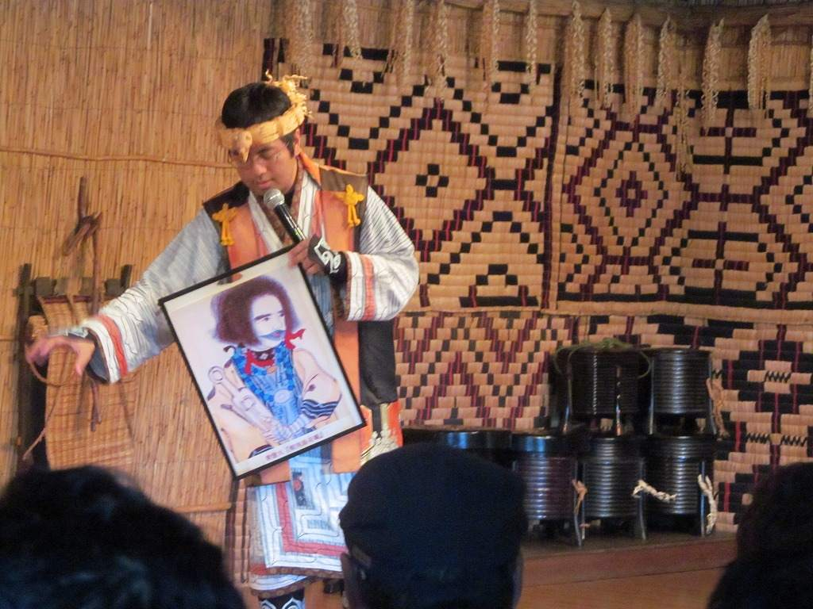

| アイヌ探訪 (示現舎) | |
| 鳥取ループ & 三品純 | |
| Jigensha (2016) | |
中表紙
まえがき
二〇一四年八月に札幌市の金子快之 市議が「アイヌ民族なんて、いまはもういないんですよね。せいぜいアイヌ系日本人が良いところですが、利権を行使しまくっているこの不合理。納税者に説明できません。」とツイッターで発言し、マスメディアをはじめ各方面から袋叩きにあった。
しかし、この一件に違和感を覚えた人は多いのではないだろうか。
違和感の一番の理由は、金子市議に対するマスメディアなどの批判の中身の無さである。多くは「差別だ」「ヘイトスピーチだ」といった紋切り型の反論であって、最も重要な「利権」の問題についての議論はほとんど深まらなかった。
一方、本書でも述べるがアイヌに関して「利権」が存在し、現在に至るまで多くの問題が生じていることは紛れも無い事実なのである。
「アイヌ」は単に民族とは何かという問題ではなく、「人権」と「差別」というキーワードが関わる問題である。事実、アイヌは法務省が掲げる「人権課題」の一つとして挙げられているのである。「アイヌは差別される人々なのだ」そのような「公式見解」を政府が掲げているに等しい。
そうなると、何か問題提起がされても、その反論は言葉尻を捕らえた「差別だ謝罪せよ」に終止し、肝心の政策や公平性といった議論が深まらないのである。
筆者がこの問題に興味を持ったのは、同様に「人権課題」と挙げられており、なおかつ筆者が長らく追求してきた「同和問題」を共通するものがそこに見えたからだ。すなわち、本来解消されるべき「差別」の存在自体が既得権益となり、「行政の継続性」の名のもとに継続されるという、おぞましい現象である。
それでも「同和」に関しては、主要な同和団体である部落解放同盟と共産党が歴史的な経緯から対立してきたことから、政策についての中身のある議論が全く行われないということはなかった。
一方「アイヌ」はどうか。まさに自民党から共産党までアイヌ万歳のオール与党状態となってはいないか。
無論、二〇〇二年までの三三年間で、同和事業による一五兆円とも言われる金が動いた「同和」に比べれば、アイヌで動いている金など微々たるものだろう。しかし、筆者が危惧するのは、そのような金の問題ではなく、また懲りずに国民の表現の自由の軽視、思考停止を繰り返すのかということだ。
「知的暴力」という言葉がある。情報を独占する者が、自分の知識をひけらかして相手を見下し、議論を封じる行為である。同和の取材では最初の頃そういう経験が何度かあった。最初に「差別とは何か」「部落問題をどう考えているのか」といった質問を唐突にし、それに答えられないと相手を排除し、返答に少しでも間違いがればそこをとらえて徹底的に糾弾するのである。
無論、そのようなことに怯 んではいけない。
同和にしろアイヌにしろ、それが「政策」である限り、全ての国民は口出しする権利があるはずだ。何より、我々の無知が非難されるべきものだと言うのなら、なおさら我々は知識を求めるべきだろう。
目次
同和・沖縄・アイヌ 三者をつなぐ国際ＮＧＯ「ＩＭＡＤＲ」とは？
示現舎は「同和」「在日」を中心に「沖縄」「アイヌ」といった問題を取材してきた。もうご承知の通り、これらの団体、問題は日本ではタブーをとされており、一般メディアで仮に擁護、啓発記事が掲載されたとしても、批判記事が大々的に報じられることは稀だ。
そして現在、沖縄の普天間飛行場移設の他、アイヌ問題、またヘイトスピーチ規制が議論される中で、ある団体が横断的にこの問題に絡んでくる。
それが本稿で扱う国際ＮＧＯ団体「反差別国際運動」（ＩＭＡＤＲ ）である。
なお通常、国内の活動拠点を示す場合は、反差別国際運動（ＩＭＡＤＲ─ＪＣ）と呼ぶが便宜上、本稿では「ＩＭＡＤＲ」で統一して進めて行く。
結論から言えば、同団体は、部落解放同盟の内部組織であり、いわば別働隊である。住所は、東京都中央区入船一―七―一 松本治一郎 記念会館六階で、部落解放同盟中央本部と同じ施設内にある。
もともと松本治一郎記念会館は、東京の六本木にあったものが入船に移ったが、とにかく日本の人権問題について部落解放同盟と同様に政治、行政などに影響力を与えていることは言うまでもない。
ではＩＭＡＤＲとは、一体、どのような団体なのか。ここでは、団体の本質について迫ってみる。
松本治一郎記念会館の思い出
くだらない話であるが、本論の前に小話を一つ。六本木に松本治一郎記念会館があった頃、何度かＩＭＡＤＲ主催のシンポジウムに出席したことがある。六本木とは、日本でも有数の繁華街であり、今も昔も流行の先端の町だ。
そこに行政関係者や政治家すら名を聞けば震えあがる部落解放同盟の施設があるのだから、なんとも妙な取り合わせである。かつて六本木の待ち合わせと言えば六本木交差点前のケーキ店「アマンド」が有名だった。松本治一郎記念会館は、このアマンドから徒歩八、九分の場所にあった。
一階は部落解放同中央本部の事務所があり、専従職員や活動家たちが作業をしていた。二階には大会議室があり、シンポジウムはここで行われていた。
シンポジウムは、解放同盟の幹部の他、いわゆる人権派の弁護士や大学教官などが出席し、パネルディスカッションや活動報告などを行う。その後、車座になり参加者を交えて人権問題を議論するということもあった。
参加者たちは、「市民」を自称するがその多くは、まず「活動家」であり、何らかの市民団体に所属している人である。自己紹介する場合もあったが、まず風体からして活動家臭を放っており、要するにルックス自体が〝名刺代わり〟のようなものだ。
例えばこのようなパターンもある。それぞれ興味をもったテーマに対してだいたい四～五人が一組になりグループワークを行う。そして専門家がグループに一名つき議論の進行役を務め、めいめいに問題意識を議論し合うのだ。
「私が日常で感じた差別」
著者が参加したのは、確かこのようなテーマだったと思う。いきなり進行役に「差別を感じたことがあるか？」と尋ねられた。
「差別を受けた経験」。実に難しい。私が鈍感なのかもしれない。だが生活に支障をきたした差別を感じたことはないので、「ない」と答える。しかしこれでは、納得されない。
「いやあるでしょ？ 自分の差別を意識できないことは、他人の差別にも無関心ということですよ」と進行役や他の参加者からもたしなめられる。
しかしないはない。いや反応を見たいからあえてないと言い張ってみるという面もある。
というわけで次の参加者に質問がふられるわけだが、もちろんその他、出席者は違う。
「私は、通院しているが病院で他の患者に笑われたような気がした。すごい差別を感じた」
このように言ったとするともちろん同情の声が寄せられ、その病院や患者の責任を問う意見が飛び交う。
もうこうなってしまうと笑いをこらえるしかない。あまりにも教科書通りの差別体験だからだ。この「笑われたような気がした」というのは、部落差別の事例でもたびたび使われるものだ。何に対して「笑われた」のかここでは、問題にされない。
要するに誰かが笑ったという行為は、即「差別意識」に起因していると断定されてしまう。この時、突然、「通院している」という女性は、「怖い怖い」となぜか痙攣 し出し、スタッフに抱えられ退出していった。
「一体、何なの？ これ」
という思いをよそにグループワークは、進んでいく。一応、国内における有数の人権団体だが、内情はえてしてこんなものである。
ＩＭＡＤＲ発足前夜
ＩＭＡＤＲは一九八八年一月二五日、部落解放同盟が中心になって設立された。解放同盟以外では、北海道ウタリ協会（現・北海道アイヌ協会）、全国障害者解放運動連合会、民族差別と闘う全国連絡協議会他、海外の団体が参加。
発足時の役員は、理事長が部落解放同盟中央本部、上杉佐一郎 中央執行委員長、事務局長に部落解放研究所の村越 末男 理事長、他役員二〇名中七人が解放同盟の関係者だった。こうした陣容を考えれば ＩＭＡＤＲ＝解放同盟 と見るべきだろう。
現在は、理事長職を務めるが武者小路 公秀 氏が、解放同盟からも組坂 繁之 中央執行委員長が副理事長を務める他、理事に北口 末広 中央副執行委員長がおり、事実上、解放同盟の影響下にある。
発足後、一九八九年、一九九一年と二度にわたり、登録申請は、却下された。国連内部からも「糾弾」などの行為が不当として、登録について慎重にすべきという意見もあったという。
一九九三年三月三〇日に国連ＮＧＯのロスター（メンバー）として登録された。この当時は、まだ解放同盟は「確認会・糾弾会」を背景に激しい行政闘争を繰り返した時代。
日本共産党系の全解連（現・人権連）からも批判を受け、登録については裁判闘争にも発展した。共産党に限らずＩＭＡＤＲの国連ＮＧＯ登録に警戒感を抱く団体、関係者は、少なくなかった。
ただでさえ国内の行政機関、企業に強い影響力を持つ上に、国連にまで発言権が及ぶとなればさらに解放同盟の権限や存在感が増大するからだ。しかも「国連」という日本人が最も弱いであろうこのお墨付きを与えるわけだ。
通常、国連ＮＧＯに登録されると、国連の経済社会理事会などと協議資格を持つことができる。たまに「国連から日本政府に是正勧告」とＩＭＡＤＲなどの機関誌に掲載されることがある。こうした勧告もすべてこれらＮＧＯの主張や協議によってなされるもの。
とは言え国連ＮＧＯと一言でくくってもその扱いはカテゴリーで異なる。
一般協議資格団体（カテゴリーⅠ）、特別協議資格団体（カテゴリーⅡ）、そしてロスター（カテゴリーⅢ）という区分。
一般協議資格団体は、幅広い諸問題について、一方、特別協議資格団体は、特定の分野についての協議できる。ロスターについては、「場合によって経社理あるいはその補助機関の活動に有用な貢献を行いうる」という扱いゆえにランクとしては最も低い位置だ。
しかしながら国連ＮＧＯという大義を得たのには、変わりなく国際政治の舞台で実質、解放同盟の主張が少なからず反映されることを意味する。やがて二〇〇八年にＩＭＡＤＲは特別協議資格を得ることになるが、ロスターか特別協議資格であるかは問わず、国内外での運動に展開していった。
現在は、ジュネーブにも事務所を設置しており日本の国連ＮＧＯとしてはもっとも活発な活動を行っている。
ドゥドゥ・ディエン人種主義
それ以来、同和問題に限らず在日コリアンの人権問題、朝鮮学校の無償化、沖縄の基地移設問題、またはアイヌ問題など幅広い人権運動に関わっている。
もちろん部落解放同盟もＩＭＡＤＲの活動を重視しており、大会なども同盟員たちに活動の理解、参加を求めている。
特別協議資格を取得した二〇〇八年の部落解放同盟全国大会の運動方針を見ても「反差別国際連帯活動を強化しよう」と明記している。「従軍慰安婦に対する謝罪と補償」、「国内人権機関の創設」の他、「世系にもとづく差別に関する一般的勧告二九の普及と宣伝」などだ。
この項目が部落差別として国連の場で主張していくと言うのだ。
ドゥドゥ・ディエン人種主義・人種差別等に関する国連特別報告書による日本訪問報告書を活用した「人種差別撤廃ＮＧＯネットワーク」への参加を呼びかけている。
ドゥドゥ・ディエン氏とはセネガル出身で 国連人権理事会の特別報告者だ。日本の人権団体に招待され、同和地区のフィールドワークや京都のウトロ地区の視察を行い、これが「日本の差別だ」と言わばんかりに国連人権理事会の場で報告する。要する特別報告者といっても人権団体丸抱えのいわば〝運動家〟。ではディエン氏に同和問題の歴史や、在日コリアンの歴史を尋ねて答えられるものでもないだろう。
えてして国連の場とはこのようなものである。日本の事情を精査したわけもでもない委員が一部の運動家のレクチャーを受けて、断片的な知識で日本を非難する。その実態が垣間見えるエピソードを紹介しよう。
「国連・自由規約委員会第五次日本政府報告書審議会」に参加した人権団体関係者は、その中身をこう解説する。
「ＮＧＯメンバーらは、『意見交換会』として日本国内の人権状況を報告します。約一時間のランチ時間を使って、一団体が三分ほどで人権問題を訴えます」
わずか三分でとても委員たちが理解できるとは、思えないがとにかくこれを持って委員たちは「日本の人権状況」と判断するようだ。
人権規約委員会が終了すると、今度は「懸念事項」と「勧告」に分かれて、総括所見という形で日本政府に審議内容が報告される。
第五次の審議会の慰安婦についての所見を見てみよう。
懸念事項「委員会は、締結国がいまだに第二次世界大戦中の『慰安婦』制度に対する責任を認めておらず、加害者が起訴されていないこと、被害者に支払われた補償が公的な基金ではなく私的な寄付によって提供され、それが不十分であることについて、また『慰安婦』問題に関する記述を含む歴史教科書がほとんどないこと、そして被害者を引き続き中傷もしくは否定する政治家やマスメディアが存在することについて懸念を持って言及する」
そしてこの懸念事項を受けて出された勧告がこれだ。
「締結国は慰安婦制度について、法的責任を認め、大多数の被害者が容認できる方法で謝罪し、被害者の尊厳を回復し、現在も生存している加害者を訴追し、生存する被害者に適切な補償を行うよう迅速かつ効果的な立法的及び行政的措置をとり、この問題について学生や一般大衆を教育し、被害者を中傷したりこの事件を否定したりするようなことに対しては異議を唱え、処罰するべきである」
まるで人権団体の機関紙に掲載された文章化と見間違う内容。ここに中立性や客観性があるだろうか。
慰安婦問題について疑義を唱えたら処罰すべきともいう。では『朝日新聞』が正式に誤報と謝罪したいわゆる「吉田証言」についても鵜呑みにして慰安婦問題は、全て事実だと言うのだろうか。
こうした報告にもＩＭＡＤＲの主張が大きく影響しているわけだ。要するに彼ら部落解放同盟にしてもＩＭＡＤＲにしても国内においては「行政も部落差別を認めた」などと喧伝する。そして国際舞台の場で今度は「国連も日本が非人権国家と認めた」とほくそ笑んでいるのである。
しかしレッテルや権威に盲従する態度が差別を生みだすと言いつつ、自分たちはこれみよがしに「行政」「国連」を持ち出すのであるから矛盾しているのではないか。
ＩＭＡＤＲの戦略は？
ところが興味深い点もある。実は朝鮮学校の無償化やアイヌ問題、あるいは沖縄の普天間飛行場の問題については、国連人権理事会でもそれなりに理解を示してもらえるのだが、実は同和問題については〝微妙〟な扱いなのである。
つまり委員たちからも「部落問題が地域的な差別か血統による差別なのか定かではない」として明確な勧告を引き出せていないのである。そこでＩＭＡＤＲが話題になっている現象を中心に攻撃しようというのだ。
もちろん現在だと沖縄が最もホットなテーマ。そこで「沖縄県民の人権が辺野古新基地建設計画によって脅威にさらされていることを懸念する。人権を守るために抗議する人々が警察や海上保安庁の暴力の対象となっている。日本政府に対しこのような暴力を控え、沖縄の自己決定権を尊重するよう要請する」（琉球新報二〇一五年六月二六日）などと訴えた。
二〇一二年にもＩＭＡＤＲは辺野古移設やオスプレイ配備の撤回を日本政府に勧告するよう求める声明を人権理事会に提出している。
とにかく「国連」という言葉に弱く甘い、日本政府を外から攻撃しようと言うハラだ。
ＩＭＡＤＲに参加する若者
国連とは本来は加盟国の連合体のことである。本稿で述べてきた「国連」は正確には国連事務局であり、加盟各国の利害から離れて中立な立場で運営される。
その国連事務局の中の国連人権高等弁務官事務所、さらにその補助組織である国連人種差別撤廃委員会がＩＭＡＤＲの主な活動の場だ。ここは人種差別撤廃条約を運用する機関で、各国が条約を正しく運用しているかどうかを監視し、必要に応じて勧告を行っている。
ジュネーブのＩＭＡＤＲ事務所は、国連人種差別撤廃委員会の活動をモニタリングしている。国連人種差別撤廃委員会に対して同様の活動を行っているＮＧＯは、日本では今のところＩＭＡＤＲが唯一であるという。
二〇一六年一月、松本治一郎記念会館でＩＭＡＤＲの活動報告会が行われた。報告会に訪れて驚いたのは、参加者がほとんど全て若い女性であることだ。ジュネーブに常駐している事務員は男性だが、これも若い。さらに、インターンの女性事務員が一人常駐しているという。
毎年三，六，九月が国連人権理事会の会期がある。その場には各国の担当者が参加するのだが、国連事務局は市民社会の声を聞いているという言わばアリバイ作りのために、国連事務局はＮＧＯから口頭または書面での声明を受け取る。口頭の声明については、各国の担当者が異議を唱えることがあるが、書面の声明はそのまま国連事務局の各分野の担当者に届けられる。また、書面で意見をすることはＮＧＯに限らず、任意団体や個人でも出来るという。
そして、もう一つ重要なのが昼食などの休憩の時間だ。休憩とは言っても、実質的にはそれは関係者が意見をすり合わせる時間であって、ＮＧＯは国連の担当者と接触して自分の意見を主張する場である。まさにロビイングのイメージ通りで、担当者も多くの場合話しかけてきたＮＧＯ関係者を無下に扱うことはしない。
二〇一五年九月に翁長 雄志 沖縄県知事が国連理事会で演説した際は、市民外交センターと主にＩＭＡＤＲがセッティングを行ったのだという。
そして、国連が日本政府に対して沖縄の人々が先住民族であると認めるように、何度か勧告を出させている。その理由は先住民族の権利に関する国際連合宣言に、先住民族の土地での軍事活動を原則禁止する条文があるからだ。言ってみれば、沖縄の人々が先住民族であるとの主張は、それ自体が目的というよりも、沖縄の非軍事化という目的を達成するための手段という面を持っている。
ＩＭＡＤＲは時々インターンを募集しており、若者はいくらでも集まってくる。それはそうだろう、国連の場で活躍するということが学生にとって魅力的でないはずはない。一方で、ＩＭＡＤＲは部落解放同盟とは別の組織ではあるのだが、部落解放同盟の方針から外れたことはできないという関係者の本音も聞かれた。
報告会の参加者に聞いてみると、誰かから勧められてここに来たというわけでもなく、文系の学生が人権問題を学習し、それを生かせる場を自分で調べた結果ＩＭＡＤＲに興味を持ったというパターンが多かった。ほとんど女性なのは、ＩＭＡＤＲが彼らのいう「マイノリティ女性に対する複合差別」の問題（部落、アイヌなどのマイノリティの中でも女性が特に抑圧されているという考え）に力を入れているためだろう。
国連というと、世界各国の政府関係者が話し合って物事を決めているので、それだけ権威があるというイメージがあるが、実態はこのようなものだ。中立ではあるのかも知れないが、国連は決して民主的とは言えない。一部の根回しで決められた事柄が各国に勧告され、各国に国内政治に影響を及ぼしている現状はもっと認識されるべきであるように思う。
しかし、これほど大きな影響を及ぼしているＩＭＡＤＲについては、なぜか大手メディアではほとんどクローズアップされることがない。記者がＩＭＡＤＲの所在地を知った途端に、お決まりの「同和タブー」が発動してしまっているのではないかと勘ぐってしまう。
解放同盟は幹部の高齢化が進んでおり、放っておけばいずれ組織が持たなくなると言われることがあるが、ＩＭＡＤＲは完全に若者の組織だ。報告会の場では、ツイッター等のＳＮＳでの活動も呼びかけられた。解放同盟の政治的な影響力は決して衰えておらず、世代交代も着実に進んでいると見るべきだろう。
アイヌ利権とは何か
「権利」という言葉の漢字をひっくり返すと「利権」という言葉になる。両方の言葉の意味は共通しているが、前者に比べて後者の意味はより限定的である。すなわち利権とは、他者を排除して特定の人や集団だけに与えられた権利のことである。
北海道において、アイヌに対する特別な優遇があることは、誰も否定することができない事実である。確かに、アイヌ利権と呼ぶべきものは存在しているのだ。
例えば、北海道の予算から「就職奨励事業費補助金」が公益社団法人北海道アイヌ協会に支出されている。これは「アイヌ住民が就職のために必要とする経費（就職支度資金）、及び自動車等運転免許を取得するために必要とした経費（自動車等運転免許取得資金）に対して」支給されるものである。
就職支度資金は、中学校を卒業して就職したアイヌ住民に対して二万三一〇〇円までの金額が支給されることになっている。しかし、今の時代中学校で学歴を終える人はほとんどいないためか、二〇一四年度は支給実績がない。
一方、自動車等運転免許取得資金は各種自動車運転免許、船舶免許、クレーン運転免許の取得費用に対して、五万円までが補助される。この事業については、二〇一四年度は二一件、合計一〇五万円が支給された。
他にもアイヌに限定した特別の制度として、高校生への補助（アイヌ子弟高等学校等進学奨励費補助）、大学進学者向けの奨学金（アイヌ子弟大学等修学資金等貸付制度）がある。これも北海道が行う事業だが、費用のうち半分は文部科学省から国費が支出されている。
この制度の対象は、もちろんアイヌの子弟であって、「経済的な理由により進学後修学が困難な者」であるとされる。ということは、単にアイヌであるというだけでは対象とならず、所得制限がある。その基準額は家庭環境によって変わるが、例えば親二人子一人のサラリーマン家庭で公立高校に自宅から通学している場合、他に特別な事情がなければ、おおむね年収六〇〇万円である。家族が増えれば、この基準額はもっと高くなる。
北海道の平均世帯年収は二〇一四年で五九二万円なので、基準額はそれを軽く上回っている。平均世帯年収は極端に高収入な世帯が押し上げている実態があるので、ほとんどの家庭の収入は平均以下である。そのため、所得制限は「経済的な理由により進学後修学が困難」な人に支給するためというより、比較的高所得の家庭を除外するためといった意味合いが強い。
二〇一四年度の実績では四一八人がアイヌ子弟高等学校等進学奨励費補助の支給対象とされた。支給総額は八四七七万九九三四円であり、うち四二三八万九九六五円が国費であった。一人あたり平均で年間約二〇万円が支給された計算である。
一般向けの同様の制度としては、文科省が都道府県を通して行っている高校生等奨学給付金制度があるが、これは生活保護受給世帯か、低所得のため住民税が非課税とされた世帯が対象であって、支給額は一人あたり年間三万二三〇〇円（生活保護世帯）または三万七四〇〇円（住民税非課税世帯）である。しかも、この制度は、公立高校に通う生徒だけが対象だ。対して、アイヌの制度は私立高校も対象となっている。
二つの制度を比較すると、アイヌを対象とした制度が支給条件においても金額においても、いかに破格であるか分かるだろう。
また、アイヌ子弟大学等修学資金等貸付制度では同じ年度に一〇〇人が対象となり、合計八二六二万六八二一円、一人あたり平均で約八〇万円が無利子で貸与されている。対象の所得制限はアイヌ子弟高等学校等進学奨励費補助と同じである。
この制度は、「貸し付け」ということになってはいるが、かつては実質的にはほとんど給付金であった。二〇〇九年に小野寺 秀 道議会議員（当時）がこの問題を道議会で追求し、道側は一九八二年から二〇〇七年まで貸し付けられた合計二四億九一七一万円のうち、二一億一六一二万円もが減免されていたと答弁している。例えば、一人世帯なら年収が五八五万円以下であれば返済が免除されるというように、返済の減免基準が非常にゆるかったためだ。
このためか、二〇一一年度の貸し付けからは減免基準が徐々に厳しくなり、現在では年収三〇〇万円以下の状態が五年間継続した場合となっている。しかし、日本学生支援機構の奨学金が、単なる生活困窮では原則として免除されないのに比べれば、破格の条件である。
これ以外に、市町においては住宅の新築、改築にあたっての貸付金制度が存在している。貸し付け条件はどこの市町でもほぼ同じで、現在のところ新築の場合上限は七六〇万円、年利は二％である。
この事業は最盛期である一九八〇年代には年に一〇〇件以上の貸し付け実績があったが、二〇一四年にはわずか三件にとどまっている。ご承知の通り、昨今は低金利政策が長らく続いており、住宅ローンの金利も過去最低水準である。よって、そこそこの信用力があれば二％よりも低い金利で、なおかつ固定金利で民間の銀行から借りることができるので、行政の貸付金制度の存在意義はかなり薄れている。
個人給付的な事業以外では、ケタ違いの税金が投じられている事業がある。例えば「アイヌ農林漁業対策事業」だ。これは、アイヌ農林漁家の戸数が原則として三戸以上ある地区を対象として市町村が実施する事業に対し、三分の二の予算を国が負担するものである。農林水産省か所管しており二〇一一からは「特定地域経営支援対策事業」という名称に変わり、沖縄に対する農業対策とセットになった。二〇一五年には二億二八〇〇万円の予算が組まれている。
しかし、この事業については「アイヌ」と名がつくものの、その中身は例えば東日本大震災で被災した漁業施設の復旧等にも使われており、アイヌ利権というよりは、アイヌを名目に地域対策の予算を国から得ているようにも見える。
また、産業対策として「アイヌ中小企業振興対策事業」というものがある。これは「ふるさと名物応援事業」という名目で、中小企業庁からアイヌ民工芸品の振興のために特定の企業・団体支出されるものである。二〇一五年の予算は七一六万五〇〇〇円であり、支出対象はアイヌ協会一団体だけである。
この事業については、実質的にはアイヌ協会を対象とするために続けられているようで、アイヌ利権というよりは「アイヌ協会利権」と言うのが適当かも知れない。
さて、これらの制度が何をきっかけに、いつから始められたのか。実は、その歴史をひもといていくと、必ず「同和問題」にぶつかるのである。
本州で行われた同和事業を知っていると、北海道で行われているアイヌ向けの事業が同和事業に非常によく似ていくことに気づく。似ているどころか丸っきり同じものもある。それは当然のことで、アイヌ事業と同和事業は歴史的にも政治的にも互いに影響しあってきた。
同和事業と共通するアイヌ対策
国家事業として行われた同和事業は、「歴史的社会的理由により生活環境等の安定向上が阻害されている地域」（いわゆる「同和地区」）を対象として一九六九年から二〇〇二年まで行われた。
対象となる同和地区は、古文書や口伝を手がかりに、かつての穢多 村など、差別されている地域を地方自治体が認定し、それを国（当時の総理府の同和対策室、後の地域改善対策室）に報告する形で把握された。施策の対象者の認定方法は地域や時期によってまちまちであるが、多くの場合は、事実上同和地区関係者により組織された民間団体である部落解放同盟によって認定されていた。
同和事業のうち、個人給付的なものとしては、就職支度金、運転免許の取得費用の補助、進学奨励金、奨学金といった制度があり、これは北海道で現在アイヌに対して行われている施策とよく似ている。
これらの施策は、国による同和対策事業が終わった現在でも、市町村によっては一部が残っている。しかし、「逆差別である」「時代遅れである」「格差が解消した」「別の制度で代替できる」といった理由で、これらの制度を廃止する自治体が年々増えているのが現状である。少なくとも、都府県単位ではもはや残っていない。
例えば、鳥取県米子市では二〇〇九年度まで同和地区の高校進学者には月八〇〇〇円の進学奨励金が支給されていたが、二〇一〇年度から国の高校無償化制度が始まったことを受けて廃止した。
しかし、事実上の国費による事業が残っている分野もある。例えば、厚生労働省が管轄する隣保館事業である。同和対策で設置された福祉施設である隣保館の運営費用の三分の一について、未だに国が予算を支出し続けている。
この事業は同和対策事業が始まる以前の、一九六〇年から「地方改善事業」という名称で続けられてきたものである。つまり、名目上は同和対策事業とは関係なく行われてきたため、残ることになったのだろう。
実はこの事業、本州以南では事実上の同和対策だが、一九六一年に地方改善事業費に「ウタリ対策福祉費」が盛り込まれて以降、北海道ではアイヌ対策として行われている。北海道の各地にある「生活館」という名称の施設は、厚生労働省では隣保館として位置づけられていて、同和対策の隣保館と同じく現在でも国費が投じられている。
アイヌの側から
旧土人保護法存続を
求める声が
しかし、今現在も残るアイヌ優遇策の起源をさらにたどっていくと、それは同和対策とは異なるものである。アイヌ優遇策のそもそもの起源は、一八九九年に制定された北海道旧土人保護法である。
ご存知の通り、旧土人保護法は一九九七年にアイヌ文化振興法が制定されるまで残されていた。今の時代の感覚で、法律の名前から受ける印象だけで判断してしまえば「こんなアイヌを差別する法律をずっとそのままにしていたのは国会の怠慢 だ！」と思ってしまうかも知れない。
しかし、法律の名称に「保護法」とある通り、旧土人保護法はアイヌを優遇する法律である。一五年以内に開墾 しない場合は没収されるなど様々な条件付きではあったが、農業を営むアイヌに一五，〇〇〇坪までの土地（給与地）を無償で与えるという内容であったことは、比較的よく知られている。
この土地の広さを今の単位に換算すると約五ヘクタール。ちょうど東京ドーム一個分程度の広さである。大変な広さに感じられるかも知れないが、これは北海道の農地の大きさとしては標準的なものである（現在の農地法でも、北海道に限っては農家の最低経営面積は他の都府県の四倍の、二ヘクタールと定められている）。
また、法律の対象は正確にはアイヌではなく、「旧土人」であることにも注意が必要である。これは北海道の土着民という意味であり、実際に当時北海道に土着していたのはアイヌに限らない。しかし、後に旧土人とアイヌはイコールで語られるようになる。本稿でも便宜上、アイヌと言っておこう。
土地の給付だけでなく、法律が出来た当初は、貧困者であるアイヌには農具、医療、教育などの給付を行うことが定められていた。一九三七年には、不良住宅の改良、アイヌを保護するための施設を設置する条文が追加された。「アイヌを保護するための施設」というのは、要は現在の生活館のことである。今の「アイヌ利権」に通じるのは、これらの規定である。
しかし、一九四六年には貧困者に対する給付に関する条文のほとんどが削除されている。これは、同年に生活保護法が施行されて、アイヌ限らず貧困者全般に支援が行われるようになったためだ。つまり、「一般対策化」されたわけである。ただし、この時は教育に関する給付に関する条文だけは削除されず、一九六八年になってようやく生活保護法によって手当できるようになったという理由で削除されている。また、同時に旧土人保護法から不良住宅の改良の条文が削除された。これは一九六〇年に住宅地区改良法が制定され、不良住宅の改良も一般対策として行われるようになったからだろう。
結果として、生活館に関する条文が法律の廃止まで生き続けることになった。
旧土人保護法の廃止が本格的に提案されたのは、一九七〇年のことである。同年六月五日に北海道下の市長による全道市長総会で旧土人保護法廃止の提案が当時の五十嵐 広三 旭川市長から出され、全会一致で採択された。
しかし、当のアイヌの側から廃止を望まないとする意見が多くあり、その理由も様々で、議論は紆余曲折した。名前からしていかにも時代遅れな法律が、これほど長い間廃止されなかったのはこのためである。
同年六月一四日の北海タイムズによれば、当時札幌テレビ放送で旧土人保護法の存廃をめぐる討論番組が収録され、様々な意見が出された。
行政側の立場からすると、旧土人保護法廃止でほぼ意見が一致していた。
その理由の一つは、やはり差別的であるということだ。例えば、土地の扱いに関する制限がアイヌに対する差別であり、憲法違反と考えられること。優遇策についても逆差別であり、生活保護制度等で平等に措置できるので、アイヌだけに特別の施策は不要であることが主張された。
また、法律の条文の多くが事実上死文化しているという批判もあった。例えば、戦後はアイヌに対する土地の給付が行われなかったため、もはや給与地の没収はない。給与地の利用に関する様々な制限も、一九三七年の改正で事実上取り払われている。
ただし、土地の譲渡に関してだけ、北海道庁長官（一九四七年に北海道庁が廃止されて以降は北海道知事）の許可が必要という条文だけが残った。しかし、大正時代には既に、名義を変えずに給与地を事実上他人に譲渡してしまう行為が横行していたと言われている。また、戦後のＧＨＱ占領下時代には農地改革によって全道の給与地の約四分の一が強制的に買い上げられた。
一方、主にアイヌの側から出た、旧土人保護法廃止を望まない理由は、アイヌのための生活館や低家賃住宅が多数設置されており、こうした優遇策を放棄する必要はないということだ。
一九七〇年六月一七日、北海道ウタリ協会（現在の北海道アイヌ協会）は旧土人保護法廃止反対を決議した。その後、ウタリ協会は、アイヌ政策に関する新法（ウタリ協会新法）の制定を求めて動き出し、新法制定までは旧土人保護法をそのままにするべきだと主張するようになる。
当然、その理由は旧土人保護法廃止によって現状の優遇策の根拠がなくなることを危惧したからだ。また、後には「差別的な法律を政府が制定した証として、新法制定までは土人という名前を残す」といった趣旨の主張もされた。
同和対策とアイヌ対策が連動
一九七〇年と言えば、前年の一九六九年七月一〇日に同和対策事業特別措置法が成立している。この、同和に絡む動きが、アイヌにも影響したことは間違いない。
ウタリ協会の機関誌「先駆者の集い」（第四〇号、一九八五年八月三一日）に「ウタリ協会新法（案）策定決議に至るまでの経過」がまとめられている。
それによれば、一九六九年に自民党の秋田大助衆議院議員がウタリ協会の野村義一 理事長と面談し、同和対策事業特別措置法について、附則 にアイヌにも準用すると入れたいので、緊急に意見を聞きたいとの申し入れがあったとされる。
具体的な日付は書かれていないが、同年に同法が制定された七月一〇日よりも前であり、しかも条文に押し込めるギリギリの時期だったことは間違いないだろう。秋田大助氏と言えば、自民党の中でも特に同法の制定のために尽力した人物である。
それを受けてウタリ協会は当時の町村金五 北海道知事に意見を聞いたところ、「同和問題とアイヌ問題は本質的に異なる」のだから、同法の附則にアイヌを加えるべきではないと回答があった。その代わり、町村知事は北海道としてアイヌへの対策を行うことを検討すると確約した。そして、ウタリ協会は秋田議員に対して町村知事の意見通りの回答をした。
これはウタリ協会が同和対策と同様の特別措置を拒否したわけではなく、あくまで別の形での特別措置を求める予兆であり、自民党側にもそのための用意があることを示唆 していた。
一九七一年、ウタリ協会は「ウタリ福祉基金」を創設する構想を打ち出した。これは、ウタリ協会、北海道、国が三分の一ずつ負担して三億円の基金を設立するものである。同年五月二六日にウタリ協会の野村理事長らが、このことを直接佐藤栄作首相に陳情している。
このウタリ福祉基金は一九八二年頃まで存在し、有志により基金が集められていたことが「先駆者の集い」に書かれているが、その後、その話題は出てこなくなった。アイヌ協会によれば、結局ウタリ福祉基金は目的を達成できないまま、全額を当時のウタリ協会に寄付するという形で精算されたという。
一九七四年から「北海道ウタリ福祉対策」という七ヵ年計画が道により作成され、アイヌ対策のための特別な予算が組まれた。例えば、現在でも続いている住宅資金の貸し付け、進学奨励金、農林漁業対策などの事業はこの頃から始まっている。そして、一九七六年からは、多くの事業に国からも予算が支出されるようになった。現在も国から支出されているアイヌ対策予算は、全てこの頃から続けられているものである。
北海道ウタリ福祉対策はその後第四次計画までが行われ、国の同和対策事業の終了に合わせたかのように、二〇〇二年に一度終わった形になっている。しかし、「アイヌの人たちの生活向上に関する推進方策」と名前を変えて継続され、現在も続いている状況だ。
しかし、これでもアイヌ対策の規模は同和対策に比べればはるかに小さなものだった。例えば一九七七年に全国市長会がまとめた資料によると、一九七六年度の同和対策予算額は全国で二一一六億七〇〇〇万円にものぼる。その後も、この規模の予算が毎年計上され続けた。
それに比べて、アイヌ対策の予算は、最盛期の一九八一年でさえ一三億五六四三万円で、他の年も大差ない。同和対策に比べれば桁違いどころか二桁も違う。かたや全国で行われている事業、かたや北海道だけでの事業ということを考えたとしても、あまりにも差が大きい。
ただ、この予算規模であっても同和対策で起こったのと同様の問題が北海道でも起こっていた。特に深刻だったのが、住宅の新改築に対する貸付金が返還されないという問題である。当初は全く無担保で貸し付けていたのだが、さすがに一九八〇年頃からは、住宅に対して抵当権を設定するようになった。
同和対策においても、「これは過去の差別に対する代償だ」といった考えから意図的に貸付金を踏み倒す行為が横行したのだが、さすがに問題視されて抵当権を設定するようになったのがこの時期である。そこで、アイヌ対策も同和対策にならったものと考えられる。
一九八五年のデータでは、多くの支部では九割以上が償還されていたのだが、弟子屈町 、標茶町 、千歳市では六～七割程度と極端に低く、釧路市に至ってはわずか三割と異常な状態だった。この時期、「先駆者の集い」は毎年のように貸付金を返すように呼びかけを行っている。
一九八二年には、今まで給付金だった大学入学者への修学資金が貸し付けとなった。これも、同和対策において給付が貸し付けに変更されたことにならったものである。しかし、この件について協会は「このことについては、文部省・大蔵省に何回もお願いしましたが、結果的には北海道のウタリに関しては返済しなくてもよいという腹がまえがあるようです」（「先駆者の集い」（三八号、一九八三年七月一五日））と説明している。実際、貸付金となった後もほとんど給付金のような状態だったことは前述の通りである。
さて、一九八一年には、このような同和対策との格差について、ウタリ協会の会員から不満が出始めたという。その理由として、同和対策は法律が制定されている一方で、ウタリ対策には法律がないためであり、新法の制定の必要性が認識されるようになった。
一方、「先駆者の集い」四〇号の中では、ウタリ協会の総会で次のようなやりとりがあったことが記されている。
苫小牧 支部から「国民的批判をうけている同和の運動団体があると聞いております、しかし、それらの団体の要請をうけて対応している状況の中、協会の運動自体が誤解をうけたり、支障をきたしたりする問題も出てくると思います」という意見が出された。
それに対して、野村理事長は「同和関係団体の対応については当初から色々な状況があるということも存じておりましたし特定のイデオロギーや団体に組 するという考えも持っておりません」と答えている。また、同和問題とは違い、アイヌについては民族存続の問題なので、同和対策のように時限立法にすることは間違いだということも指摘された。
ここに出てくる「国民的批判をうけている同和の運動団体」というのは、要は部落解放同盟のことである。この議論が行われた翌年の一九八六年に、政府が設置していた審議会である地域改善対策協議会が内閣総理大臣に対して、「行政の主体性の欠如である。現在、国及び地方公共団体は、民間運動団体の威圧的な態度に押し切られて、不適切な行政運営を行うという傾向が一部にみられる」「何が差別かということを民間運動団体が主観的な立場から、恣意的に判断し、抗議行動の可能性をほのめかしつつ、さ細なことにも抗議することは、同和問題の言論について国民に警戒心を植え付け、この問題に対する意見の表明を抑制してしまっている」といった内容を含んだ意見具申を行った。特定の団体を名指ししたものではないが、明らかに解放同盟を念頭に置いたものであったので、これに対して解放同盟が激しく反発した。当時はそのような時代である。
一九八八年の「先駆者の集い」四八号でも、「ウタリ協会が、部落解放同盟の事業などに積極的に入っていくことは良いことなのかな？ アイヌ新法の制定に影響しないかな？」という会員の声が紹介されている。
そういった会員の心配をよそに、アイヌ協会は解放同盟との関係を深めていく。
「被差別集団」が結束
一九九七年に人権フォーラム21 が設立され、当時の笹村 二朗 ウタリ協会理事長が副代表となった。人権フォーラム21 とは、反差別国際運動（ＩＭＡＤＲ ）日本委員会委員長である武者小路 公秀 氏が設立した団体である。ＩＭＡＤＲについては本書でも詳しく述べているが、解放同盟が一九八八年に設立した国際ＮＧＯである。
なぜ、アイヌ協会が解放同盟との関係を深めたのか？ これは、一九六九年の秋田議員の話からもうかがえるように、アイヌの側から同和に寄ってきたのではなく、同和の側がアイヌに寄ってきたと見るべきだ。
特に顕著になったのは、一九七四年で、この年、部落解放同盟大阪府連合会に「政治共闘局」が作られ、様々な団体との共闘が試みられた。その課程で「被差別統一戦線」なるものが提唱された。これは、解放同盟が彼らの基準で「被差別者」とされる集団が結集し、「被差別共闘」を行おうというものである。
そのターゲットとなったのは、在日朝鮮人、障害者、沖縄県民、アイヌ、女性、原爆被爆者である。
月刊部落解放（一九七四年一二月）で、後に部落解放同盟中央本部書記長となる小森龍邦 氏が、アイヌとの共闘について報告している。小森氏が訪問したのは平取 町で、そこで当時ウタリ協会副理事長だった貝澤 正 氏と面談した。報告にはこうある。
「ウタリ協会の「ウタリ」という言葉は、どんな意味かと私が尋ねた。アイヌ語で、仲間、同志、親戚という意味をもっていると説明を加えながら、アイヌ協会といってもよいのだが、刺激が強いというので、少し柔く表現しているのだと答えた。そこには、アイヌ出身をかくして一日もはやく、大和民族に和合し、倭人 化しようとするアイヌ人の今日の姿がある。大部分のアイヌ人が「寝た子を起こすな」意識に侵されている」
「寝た子を起こすな」という言葉は、同和問題に関わるキーワードの一つだ。解放同盟は「そっとしておけば差別はなくなる」という態度をこの言葉を用いて徹底的に批判し、自ら被差別部落であることを明らかにすることを要求した。これが「寝た子を起こせ」ということである。同和対策の優遇措置を受けるためには、当然、どこが被差別部落であるかを特定しなければいけないのだから、重要なことだった。
さらに、小森氏はアイヌ子弟への奨学金のあり方にも疑問を呈している。当時、アイヌの高校生に進学奨励金が支給されていたが、これは親と行政のみが知っており、本人と学校には秘密にするという方法を取っていた。一方、同和対策の奨学金は大っぴらに行われており、「解放奨学金」と呼ばれ受給者による大会まで行われていた。
そんな小森氏が一つだけウタリ協会を評価していたのは、誰がアイヌかという認定をウタリ協会が行っていたことである。これは解放同盟が言うところの「窓口一本化」の実現であり、「部落民」の認定を解放同盟だけが行う体制を目指していた解放同盟にとっては理想的な状態であった。
さて、その後、解放同盟広島県連がアイヌ青年を研究集会に招待するという形で、解放同盟とウタリ協会の交流が続けられた。
そうして広島に招待されたアイヌの中でも、最も強く感化されたと思われるのが、後にウタリ協会理事となる成田 得平 （一九九〇年に秋辺 に改姓）氏である。成田氏は一九七四年七月二七日に解放同盟に招かれて「アイヌ解放と被差別人民との連帯」と題して、広島県立体育館で講演を行った。そこで、「今後、部落解放運動がほんとうに人間解放に向っていく時、我々は大いに道庁することにやぶさかではございません。いつでも手を取り合って連帯していくことを大いに希望いたします」と語っている。
それから一〇年以上後のことであるが、ウタリ協会は「寝た子を起こす」試みを実践し始める。一九八八年の定期総会で、「北海道アイヌ協会」と名称を変更することが提案されたのである。そこで、会員へのアンケートが実施されたのだが、これが惨憺 たる結果であった。
五〇〇世帯にアンケート葉書を送付したところ、回答率がわずか一八％であり、しかもアイヌ協会と名称変更すべきと答えたのは九世帯だけであった。結局、この問題についてほとんどの会員は無関心、関心があったとしても現状維持が圧倒的多数だったのである。当然、名称変更は断念された。
その後、何度が名称変更が提案されたのだが、その度に否決されるという有様だった。
この名称変更は非常に根の深い問題だった。戦後まもない一九四六年に「アイヌ協会」という名前でアイヌの団体が結成されているのだが、最初のアイヌ協会はやがて立ち消えになっていまった。そして、一九六〇年に再建されたが、その時に名称を「ウタリ協会」とした。
これは貝澤正氏の話にもあった通り、多くのアイヌが、アイヌ語で人（特に男）を意味する「アイヌ」という言葉に強い抵抗を持っていたためである。それは最も直接的にアイヌを指す言葉であり、それゆえに侮蔑 的な意味で使われることもあったし、何よりもアイヌがアイヌであるということに誇りを持っていなかった。
そこで、同胞を意味する「ウタリ」という言葉を使うことになった。これは当時徹底されていたようで、一九六五年には学校においてもアイヌという言葉を避けてウタリを使うように、協会が要請していたという。
結局名称変更が実現したのは、二〇〇八年六月六日に国会で「アイヌ民族を先住民族とすることを求める決議」が採択された翌年の二〇〇九年四月一日のことである。
さて、話が前後してしまうが、ご承知のとおり一九九七年五月一四日にアイヌ文化振興法が制定され、旧土人保護法は廃止された。しかし、実際に制定されたアイヌ文化振興法には、ウタリ協会が求めたものとは大きな差があった。
一九八四年にウタリ協会がアイヌ新法案を決議したのだが、それが大きく分けて六つのことを要求していた。一に差別の撤廃、二にアイヌ民族議席の確保、三にアイヌの教育・文化の振興、四に農地の確保・漁業権の付与など産業振興と労働対策、五に民族自立化基金の創設、六に審議機関の設立である。このうち、アイヌ文化振興法に明示的に盛り込まれたのは三，六の要求である。
一は自明のことであり、なおかつ旧土人保護法の廃止により名実ともに行政上の施策からは差別は撤廃された。しかし、二は後述する憲法上の問題があり、四，五も現実的ではなかった。
結局、同和対策のように、法律上の根拠を作って産業振興のために国から莫大な予算を得る試みは実現できなかったと言える。
はっきり言ってしまえば、大多数のアイヌは現在のアイヌ文化振興法に書かれていることに関心はないだろう。そういった意味では、一九七四年にウタリ福祉対策が始まって以降、多くのアイヌが新たに得た「利権」はなく、利権は年々縮小するのみである。一方、ウタリ協会からアイヌ協会への名称変更などアイヌ文化振興法制定後の動きは、多くのアイヌがほとんど関心を持たない中で、トップダウンで行われたもので、関心のある一部のアイヌだけが利権を得たと言える。
アイヌ利権は全国に広がるか？
二〇〇八年のアイヌ先住民族決議以降、国では「アイヌ政策のあり方に関する有識者懇談会」が開かれ、二〇〇九年七月二九日に同懇談会から報告書が発表された。しかし、個人給付的な事業について、新たな事業が具体的に提案されることはなかった。
その後、「アイヌ政策推進会議」が開かれ、二〇一二年六月一日に「「北海道外アイヌの生活実態調査」を踏まえた全国的見地からの施策の展開について」と題する報告書が発表されている。そこで提言されているのは、前出のアイヌ子弟大学等修学資金等貸付制度を北海道外のアイヌにも適用することを検討するというものだ。
その結果、二〇一四年から日本学生支援機構（ＪＡＳＳＯ ）の無利子奨学金（第一種奨学金）の支給要件は、大学生の場合高校での成績が三・五以上必要なところ、アイヌの場合は三・〇に緩和された。
ＪＡＳＳＯによれば、制度開始後、アイヌ協会の推薦を受けて申請した学生はいたが、そのケースでは学力が一般の受給要件を超えていたため、制度の対象とする必要がなかった。そのため、二〇一五年一一月六日現在、アイヌ向けの支給条件緩和制度を適用した事例は一件もないという。
アイヌに対する個人給付的な優遇策に共通する一番の問題は、誰がアイヌかということを、どのような基準で誰が認定するのかということだ。
結論を言ってしまえば、「アイヌの血族（養子は一代限りとする）又は当該者（養子を除く）と婚姻により同一の生計を営んでいる者」という基準で、事実上「公益社団法人北海道アイヌ協会」が認定するのである。
このことは、二〇一四年二月二六日に「アイヌ政策関係省庁連絡会議申合せ」として公開された「北海道の区域外に居住するアイヌの人々を対象とする施策の対象となる者を認定する業務についての実施方針」に書かれている。
なぜこのような基準になったかというと、例えば前出の運転免許取得費用の補助や進学奨励金のように、従来から北海道で行われている施策では、アイヌ協会がアイヌの認定を行っており、そのアイヌ協会による基準を追認したからであろう（ただし、北海道の施策では市町村長にもアイヌの認定を行う権限がある）。
それにしても、「血族」「養子を除く」といった言葉が入る認定基準には危険な響きがある。憲法一四条一項には「すべて国民は、法の下に平等であって、人種、信条、性別、社会的身分又は門地により、政治的、経済的又は社会的関係において、差別されない」とあり、アイヌであるかどうかという基準を「血」に求めるのであれば、人種による差別とされるおそれがあるだろう。
この憲法問題についてアイヌ政策のあり方に関する有識者懇談会の報告書は「事柄の性質に即応した合理的な理由に基づくものであれば、国民の一部について、異なる取扱いをすることも、憲法上許されると一般に解されており、既述のようにアイヌの人々が先住民族であることから特別の政策を導き出すことが「事柄の性質に即応した合理的な理由」に当たることは多言を要しない」としている。
しかし、アイヌ優遇制度がなかなか拡大しない背景には、前述の憲法問題によるリスクを嫌って官僚が二の足を踏んでいることがあるのではないだろうか。いくら「多言を要しない」と言ってみたところで、アイヌかどうか非常に微妙な判断を迫られるケースが生じた場合や、憲法一四条一項の問題が争点となれば、多くの言葉で説明することを試みざるを得ないだろう。
実際、同報告書は「国会等におけるアイヌ民族のための特別議席の付与については、国会議員を全国民の代表とする憲法の規定等に抵触すると考えられる」と、アイヌ議席については違憲であることを認めている。そうであれば、福祉政策についても憲法問題が生じる可能性があると考えるのが自然だ。
例えば、自動車の運転免許の取得は、どう考えてもアイヌの文化や先住民族とは全く関係がない。まさか自動車の運転がアイヌの文化ではないだろう。
高校・大学の進学についてはどうか。そもそも、同報告書は明治以降に行われた日本語を中心とした教育について「同化政策」と批判している。
仮に「「倭人」がアイヌの文化を奪ってきた、その理不尽な扱いに対する贖罪 なんだ」としても、未来永劫 子々孫々に至るまで続けることには合理性がないように思う。同和対策でさえ、少なくとも政府としては「過去の差別の贖罪」として事業を行ったわけではなく、「現存する低位な状態を解消する」という名目だった。だからこそ、同和対策は時限立法だったのである。
前出のように、過去には「民族存続の問題なので、同和対策のように時限立法にすることは間違いだ」という議論もあったが、末代まで「倭人」の援助で自動車の運転免許を取ったり、「倭人」の学校に通ったりすることがなぜ「民族存続」と関係があるのか、理解することは困難だ。
ＪＡＳＳＯの第一種奨学金支給要件には「被爆者の子女」「中国帰国孤児の子女」に対する優遇策もあるが、これらでさえ二代限りであり、いずれ死文化することは確実だ。そういった意味でも、代々継承されるアイヌに対する優遇の特殊性は際立っている。
現状ではほとんどの優遇策は北海道内にとどまっており、ようやく北海道外に広げられた奨学金の優遇も、大した優遇ではない。しかし、優遇策がさらに拡大され、利用者が増えれば、問題が表面化する可能性もそれだけ高くなる。
今年から、北海道外のアイヌに対する就職支援事業が始まっているが、これが何ともお粗末なものである。
二〇一五年三月六日に東京都中央区八重洲 にあるアイヌ文化交流センターで、「道外にお住まいのアイヌの方々のための職業訓練相談会」が行われた。対象は「道外にお住まいのアイヌの方で、就職のために職業訓練の受講を検討されている又は関心をお持ちの方」とされる。しかし、それは全く名目だけのことである。
実際に会場に行くと、ぽつぽつと相談に訪れる人がいる状態であるが、実際のところ相談対象はアイヌに限定されていない。もちろん、相談者がアイヌかどうか確認されるわけでもない。その場で渡されるのは、アイヌとは全く関係ない、一般向けの職業訓練施設（ポリテクセンター）のパンフレットである。相談できる内容もアイヌとは全く関係ない、それこそ最寄りのハローワークでもできそうなものだ。
何かしら、アイヌに対する特別の「何か」がないのか？ その場にいた相談員に聞いたところ、はっきり言ってそれはないと、きっぱりと言われてしまった。
「北海道で、アイヌの方が住んでいる「アイヌ地区」の住民を対象とした施策はありますが、今のところ北海道以外で特別な施策はありません」
ということなのである。
それでは、ハローワークでも出来るような相談会を、わざわざアイヌ文化交流センターで行うことに何の意味があるのか。その点を相談員に問うと、
「こういった場所でないと相談する機会がないアイヌの方もいらっしゃるので...」
といった具合である。しかし、もちろんアイヌだからハローワークに行けないということもないし、多くの人にとってはアイヌ文化交流センターに出向くことの方が敷居が高いように思える。
思うに、「アイヌ政策」を具現化することが非常に難しいので、とりあえずアイヌ文化交流センターという、アイヌに関わりのある施設で「何か」を行うことで実績を作りお茶を濁した、ということではないだろうか。
アイヌ扉
アイヌ探訪
人権・同和・そしてアイヌ
二〇一四年八月のこと、札幌市議会議員（当時）の金子快之 氏が、「アイヌ民族なんて、いまはもういない」とツイッターに投稿したことが物議を醸した。金子氏の発言には一部の人々が強く反発し、マスメディアはそれに概ね同調した。一方で金子氏の発言を強く支持する人もいた。
しかし、大多数の考えは反対・支持のどちらでもなく、そもそもアイヌについて「知らない」「関心がない」ということだったのではないだろうか。
筆者は長らく同和問題を追求してきたが、同和に関連して「アイヌ」というキーワードが時々見え隠れすることがある。中には胡散臭いと感じざるを得ない事実もある。
その理由の一つが、二〇〇四年に鳥取県が県民に対して行った、人権意識調査のことである。意識調査には、このような設問があった。
「鳥取県内において「人々の意識」や「社会のしくみ」に差別や偏見が存在していると思うのは、次のどれですか。」
これは、いくつか提示された項目のうちに、当てはまると思うもの全てに「○」を付ける回答形式である。項目には「同和地区の人々」「障害者」「日本で暮らす外国人」など、この種の調査にありがちなものが並んでおり、その中に「アイヌの人々」があった。さらに、設問通り「人々の意識」と「社会のしくみ」で別々に「○」を付けられるようになっている。
調査の結果、「同和地区の人々」についてそれぞれ回答者のうち五九・九％と二五・四％が「○」を付けていた一方で、「アイヌの人々」についての結果はそれぞれ一一・七％と六・五％だったのである。よく考えると非常に不思議な結果だ。
つまり、鳥取県民のうち一一・七％は「人々の意識」の中にアイヌに対する差別や偏見が存在すると考え、６.５％は「社会のしくみ」にアイヌに対する差別や偏見が存在すると考えているということだ。
筆者は鳥取県の出身だが、そもそも鳥取県でアイヌを見たことはないし、どこにいるという話も聞いたことがない。念のため、調査を担当した鳥取県人権局人権推進課に聞いてみたが、やはり思ったとおりである。県も鳥取県にアイヌがいるかどうかは把握していない、アイヌに対する差別や偏見があると答えた人が、どのような趣旨で答えたのかも分からないということだった。これはいったいどういうことなのか。
「日本国内に差別があるということでは？」という言い訳は通じない。設問には、わざわざ「鳥取県内において」と書いてあるのだから。
県でさえ存在を把握していない対象にどうやって「差別や偏見」を持つというのか。差別や偏見以前に、アイヌとは何なのか具体的なイメージすら持てないというのが大多数の県民の考えだっただろう。ましてや「社会のしくみ」とはいったい何のことなのか。そもそも、鳥取県の人権意識調査なのに「アイヌ」の項目が出てくることがおかしいだろう。
ただ、人権教育に熱心に取り組んできたという、とある小学校の教員から話を聞くうちに、その理由が分かってきた。人権教育、特にその中でも先鋭的な「解放教育」の中に、「無関心は差別である」という考え方があるのだ。
つまり、このような先鋭的な考えに染まった人が「鳥取県でアイヌが知られていないこと自体が差別である」として、「アイヌの人々」の項目に「○」を付けたのであろう。先の教員もこの説に同意していた。
なぜ選択肢に「アイヌの人々」が出てきたのか、これも理由がある。その答えは、「アイヌ」が法務省が掲げる既定の人権課題の一つであるからだ。法務省人権擁護局が取り組む人権問題は定型化されており、アイヌの他には同和問題、女性、子供、高齢者などが掲げられている。時勢や地域性を全く無視して、国の方針を鳥取県がそのまま採用した結果、鳥取県なのに「アイヌの人々」が出てくるという、奇妙な回答項目が盛り込まれたのであろう。
「アイヌ→被差別者」ということが政府における既定事項である。世の中はそんなに単純ではないと思うのだが、官僚というのは、そう決まっていればそれを前提に動かざるを得ない。過去だろうと未来だろうと、北海道だろうと鳥取県だろうと「アイヌ→被差別者」なのである。こうして、悪い意味でのお役所仕事ぶりが発揮されることになる。本来は学問として客観的に検証されるべき歴史問題にまで、前例踏襲というお役所の論理が持ち込まれるのである。
二〇〇八年に国会で議決された、「アイヌ民族を先住民族とすることを求める決議」はそうした動きに拍車をかけるだろう。そして、アイヌに対する理解が深まるどころか、政府の後ろ盾により大きなお金が動きつつも、タブー化して一部の人しか関心を持たず、誰も全容を把握できないという同和問題のような現象がアイヌにおいても起こるのではないか。
ところで、筆者が「アイヌの人々」と直接接触を持つ機会となったのが、砂澤 陣 氏にツイッターでとある集会に誘われたことである。砂澤氏は、アイヌの子孫である有名な彫刻家、故・砂澤ビッキ氏の息子ということで、この世界では知られた存在である。しかし、今ではアイヌに対する一番の批判者となっている。なぜそうなったのかは、また後で説明することにしよう。
集会自体は「中国人に北海道の土地が次々と買われている」という話で、その事自体は正直なところひっｓはあまり関心はなかったのだが、気になったのは、砂澤氏から聞いたアイヌと同和の関係である。
アイヌ協会に同和地区出身者がおり、また、同和団体（部落解放同盟）の関係者がかなり関わっている。そもそも、北海道にも本州の同和地区とゆかりのある人のネットワークがあるということだ。
後者の点については眉唾ものであるし、あまり重要なこととは思えなかったのだが、前者のことについてはかなり思い当たるところがあった。いや、政治的な動きに関して言えば、同和とアイヌに関係がないはずがない。しかし、具体的にどのような関係があるかという点については分からない点が多い。
しかし、問題の舞台は北海道。筆者にはまったくゆかりのない土地であるし、できることは限られている。そのようなこともあって、長らくこの問題を深く追求することはなかったのだが、「金子発言」のことがあって踏ん切りがついた。
二〇一四年九月、示現舎取材陣は北海道へ向かう飛行機の中にいた。筆者の一番の目的は、実際にアイヌを見ることだ。まず現場を見ないことには「金子発言」をどうとも評価できないと思ったからである。
アイヌと「生活館」
アイヌはどこにいるのか？ その手がかりとなるのが「生活館」という施設である。
生活館とは、全国的には「隣保館 」と呼ばれる施設の北海道での呼び名である。とは言っても、隣保館さえ聞き慣れない読者も多いかも知れない。そこで、まずは隣保館について説明しよう。
隣保館は、本来はスラムなどの貧困地域に設置して、積極的に福祉事業を行う施設のことである。マザー・テレサがいる場所と言えばイメージしやすいだろう。英語ではsettlement house という。
戦前の日本でも、篤志家 や宗教団体などが各地に隣保館を作った。しかし、戦後の高度経済成長により、日本から貧困地域が減ってゆくにつれ、本来の隣保館も減ってていった。settlement house でインターネット検索してみると、モノトーンかセピア色の写真がたくさん出てくる。本来の意味の隣保館は、ほぼ過去の施設なのである。
ただ、今でも生活困窮者の問題を抱える大阪の西成には民営の隣保館があるし、大阪水上 隣保館など、戦前の隣保館をルーツとする団体が今でも福祉法人という形で残っている。
一方、日本には「地方改善事業」と呼ばれる事業によって、行政によって設置された隣保館がある。これは主に同和対策事業のために設置されたものである。特に一九六五年の「同和対策審議会答申」により、同和対策が「国の責務」として位置づけられ、一九六九年に「同和対策事業特別措置法」が国会で成立したことから、以後一五兆円とも言われる国費が、近世の被差別部落にルーツを持つとされる「同和地区」のために支出された。この潤沢な予算を背景に隣保館の数は爆発的に増えた。
二〇〇二年に国の同和対策事業が終了した後も、多くの施設に対して「隣保館運営費等」という名目で、運営費の三分の一が国費から支出されている。
行政によって設置された隣保館は必ずしも「隣保館」という名を冠しているわけではなく、地域により、人権センター、地域総合センター、民主会館といった名前が付けられている。いずれにしても、隣保館が同和地区のランドーマークとなっており、その場所を調べれば同和地区の場所をおおよそ特定できることは公然の秘密である。
筆者は、隣保館を所管している厚生労働省に、隣保館に支出されている補助金について取材したことがある。その時は、同和事業として設置された隣保館に支出されている補助金の総額の市町村別資料をもらったのだが、同時に厚生労働省の職員から、補助金が出ている隣保館は同和対策事業のためのものだけではないということを説明された。それはどういうことかと尋ねると、北海道にも隣保館があり、それは「アイヌの方々のために設置されたもの」ということなのである。
ということは、「実際にアイヌを見る」という目的を果たしたいなら、生活館に行けばよいということだろう。
また、本州以南では事実上同和対策のために設置された隣保館が、なぜ北海道ではアイヌのために設置されたのかも気になるところだ。
蘭越 生活館
とりあえず生活館に行ってみようということで、事前に千歳市役所に問い合わせ、新千歳空港に最も近いところにある生活館として紹介されたのが「蘭越生活館」である。
北海道での移動には自動車が必須である。空港近くでレンタカーを借り、千歳市の代表的な観光地である支笏 湖に向かった。その途中に蘭越生活館があるという。筆者は最初、生活館を通りすぎてしまい、支笏湖の観光案内所で生活館の場所を聞いた。市の職員である観光案内所の人は、生活館と聞いた途端に「あ、アイヌの施設だね」という返事だったので、やはり地元でも生活館と言えばアイヌの施設として知られていることがうかがえた。
さて、隣保館というと、大抵入り口近くに「人権標語」が書かれたポスターがあったり、法務局の人権相談の案内が貼りだされていたりするものである。それから、地域の行事の案内や、解放同盟の強いところでは解放文化祭の案内が貼りだされているのが定番である。そして、玄関付近には解放新聞や解放同盟系の団体の出版物が置いてあることも多い。
筆者が最初に目にした生活館はどうかというと、玄関にアイヌのサケ漁のイベントの案内が貼ってあった。中にはアイヌの生活用具が置いてあり、壁にはアイヌ協会千歳支部の歴代支部長の写真が並べられていた。また、館内にはアイヌ向けの貸付金制度の案内チラシが置かれていた。そして、学習室にはアイヌ関係の書籍が置かれ、壁にはアイヌ語の基本的な単語について説明したものが貼られていた。
要は、同和事業で作られた隣保館の、「同和」を「アイヌ」に置き換え、「部落解放同盟」をそっくり「アイヌ協会」に置き換えた感じである。ただし、同和が絡むと、どうしても「差別」というものが前面に出てくるが、アイヌについては「文化」ということが前面に出され、同和が持つ独特な「陰気なタブー感」といったものは少ない。
地元の喫茶店で食事をしながら、地元の方にアイヌについて尋ねてみた。これが同和の話題ならまずドン引きされるか、知らないと言われるかのどちらかだが、アイヌについてはそういうことはなかった。国連や国会の議決により先住民族として認められたこと、ソフトバンクのＣＭに出てくる犬がアイヌ犬だといったことが話題となった。
同和事業で作られた隣保館の近くには、大抵同和地区がある。では、生活館の近くにはアイヌ集落があるのか。地元の方の話によれば、そうではないらしい。
確かに、現在の千歳市蘭越周辺には昔アイヌが住んでいた。では、アイヌ集落（アイヌ語で言うところの「コタン」）が現存しているかというとそうではない。このことについて、北海道のあちこちで話が噛み合わないことがあった。
アイヌ集落が今でも残っているか？ と聞くと「そんなものはないよ、第一、消防法に引っかかるから」といった答えが返ってくる。おそらく、筆者が昔ながらの茅葺 きの住宅を探しているものと勘違いされてしまうのだろう。
例えば「被差別部落はどこか？」と聞いたとしても、昔ながらのあばら屋が密集する部落を探しているとは思わないだろう。例えば、今は公営住宅が立ち並んでいるとしても、昔の被差別部落に由来する共同体や文化を引き継いでいるかどうかを聞いているのである。
現在の蘭越集落は、かつてのアイヌコタンを引き継いだものではない。ただし、アイヌの血を引く人が住む家は何軒かあるということだ。そのような状況なので、蘭越生活館は蘭越集落のアイヌのための生活館というわけではなく、主に千歳市全域のアイヌのための生活館である。先述のサケ漁のイベントも、千歳市とその周辺の広い地域からアイヌが集まって行われるという。
北海道のアイヌ全般に言えることとして、今ではアイヌが一つの集落で共同体を作っているということはあまりない。例えば、アイヌ協会の支部は全て市町村単位である（対して、同和地区における部落解放同盟の支部の多くは集落単位である）。
新ひだか町
一九六五年に当時の北海道日高支庁が日高のアイヌについて詳細な調査を行い、「日高地方におけるアイヌ系住民の生活実態とその問題点」（一九六五年八月一日 発行者北海道日高支庁）が刊行されている。この資料から、当時の日高地域におけるアイヌの人口分布を知ることが出来る。日高は北海道の中でもアイヌが多い地域で、北海道のアイヌのうち六割がこの地域に住んでいたという。
一九六五年資料ではアイヌについて「民族」という表現はされておらず、一貫して「アイヌ系住民」と記述されている。一方、血縁関係を指して「人種」という表現を使い、「古くから「和人」との婚姻などによる混血によって同化が進んでいるので、人種としての「アイヌ」はすでに存在しないことがほぼ予想されているところ」との記述がある。
そのような日高地域の中で、新ひだか町は二〇〇六年に静内町 と三石町 が合併して誕生した町である。一九六五年資料によれば、旧静内町に二四〇世帯一九一五人、旧三石町に八五世帯四一一人のアイヌがいたとされる。
この町でアイヌに関する名所と言えば、新ひだか町静内真歌 にある新ひだか町アイヌ民族資料館と、シャクシャイン記念館だ。千歳からは車で約二時間かかり、あまり交通の便がよいとは言えず、行こうという考えがなければ、なかなか行かない場所だろう。
アイヌ民俗資料館は、静内川の河口近くの高台にある。海が近いためか、駐車場にハマナスの実がたわわに実っているのが印象的だった。気候が適しているためか、北海道の太平洋側の海岸沿いにはハマナスが非常に多い。
筆者が訪れたのは夏休み最後の休日であったが、閑散としていた。入館料は無料なのだが、他に見学者がいる様子はない。入口付近では、昔行われたイヨマンテ（熊送り）の様子と解説のビデオが流れている。
資料館の展示物で目についたのは、アイヌの持ち物であったという、三つ巴 の紋が付いた漆器、刀剣、数珠 、そしてアイヌ文様の着物だ。このうち漆器、刀剣は室町時代以降に本州との交易でアイヌが手に入れた解説されている。着物についても、華やかなものは明治時代に綿織物が比較的容易に入手できるようになってから作られるようになったと解説されている。アイヌには製鉄や漆塗りの技術がない。また、北海道では木綿は栽培できない。従って、こういった物は交易で入手するしかないし、アイヌにとっては貴重な宝物であったという。
とすると、当然こんな疑問が湧いてくる。アイヌの文化と言っても、かなりの部分で和人に依存していたのではないか。そして、その歴史はそれほど長くないのではないかと。
見学者が他にいないということもあって、資料館の職員の方が、丁寧に説明してくれた。そこで、特に気になったことを聞いてみた。
「アイヌ紋様の着物は、明治時代になって作られたものなのですか？」
「綿生地を使ったパッチワークで作られるようになったのは、明治になってからのことです。それより前は刺繍 で、首元か裾 の部分を装飾していました」
おそらく我々の多くがアイヌからイメージする、観光パンフレット等に載っている華やかな衣装の歴史は比較的浅く、しかも和人が提供する材料に依存していたのである。ただ、アイヌ紋様自体は確かにアイヌの文化であり、少なくとも一七〇〇年の歴史があるという。
「この刀はアイヌが作ったものではないのですか？」
「いえ、みんな本州との交易です。ただ、ツバとさやだけはアイヌが作っていました。それから、模様をアイヌが掘り入れることもありました」
「それにしても本州ではあまりないような、独特のデザインの刀ですね」
「アイヌが松前藩の鍛冶屋に注文して作らせていましたから」
アイヌについて、「和人が侵略し、独自の文化を奪った」言われることがあるが、少なくともそのような一方的な関係ではなかったようである。アイヌと和人の間には対等な取り引きが成立していたという。
一方、アイヌ独自のものと言えば「キナ」と呼ばれるガマの葉を材料に作られた筵 、「チセ」と呼ばれる掘っ建て小屋の住居、「イナウ」と呼ばれる木を削って作った道具である。イナウは、神道の神社で穢 れを祓 ったり、社殿の中に立てたりする御幣 によく似ており、使われ方も同じようなものだ。
アイヌ民俗資料館がある場所は、アイヌの英雄シャクシャインゆかりの地でもある。そのため、資料館の隣にはシャクシャイン像と、シャクシャインを偲 ぶ記念館がある。
シャクシャイン像の前には筆者以外にも、女性三人のグループがおり、手を合わせて何やらお参りのようなことをしていた。
「何か、ご利益があるんですか？」と聞いてみると、「知りません」と返されてしまった。
シャクシャイン記念館もやっぱり閑散としていた。コカ・コーラの自動販売機が一台あるが「販売を中止しています」との張り紙がされている。
記念館の職員に聞いてみると、やはり来訪客はあまり多くないという。交通の便の問題があって、同じようにアイヌの観光地がある白老町 のような千歳空港に近い地域にはどうしても負けてしまうのだそうだ。それでも、シャクシャイン法要祭がある時には遠くから多くの人が訪れるという。
ついでに、新ひだか町のアイヌ事情を聞いてみた。
「この場所にもアイヌの集落があったんですか？」
「あったのは本当に昔の話で、今はいろんなところに散らばっています」
やはり、この地でもアイヌ部落と呼べるような場所は残っていないようだ。しかし、新ひだか町には多数の生活館がある。これらの全てがアイヌとのゆかりのあるものであれば、一つくらい痕跡でも残っていそうなものだ。そこで、その点を聞いてみた。
「生活館はいっぱいありますよ、ここからだと真歌の生活館が近いです。ただ、生活館と言っても公民館ですよ。確かに昔アイヌ部落があった場所に生活館を作ったみたいですが、部落といっても当時でもアイヌの家が数軒ある程度だったみたいです。アイヌは街を作らなかったですから」
確かに一九六五年資料にもそのような記述がある。アイヌの部落は狭い範囲の血族で構成され、五ないし七戸が普通であり、二〇戸を超える部落は稀であったと記されている。
それでは、ある人がアイヌの末裔かどうか、どうすれば分かるのか聞くと、
「はっきり分かるかというとそうではないですね。昔は戸籍で分かりましたが、今はそういう戸籍は見られなくなっています。ただ、アイヌ協会はありますよ」
という答えだった。
新ひだか町内には、旧静内町内に二〇箇所、旧三石町内に一四箇所、合計三四箇所の生活館がある。最初の生活館は昭和三七年に旧静内町に設置され、またこれは新ひだか町だけでなく全道に言えることだが、昭和四〇年代に生活館建設ラッシュのピークを迎えた。
一九六五年資料と現在の生活館の状況を比較すると、不可解な点がある。一九六五年当時にアイヌ部落とされた地区は旧静内町に一八箇所、旧三石町に九箇所であり、生活館の数よりもずっと少ない。
そこで、どのような経緯で生活館が作られたのか、管理する新ひだか町福祉課に聞いたところ、このような答えだった。
「生活館は、例えば何々町といった行政区画単位で、アイヌの方が何世帯か住んでいたところに作られました」
つまり、生活館の設置場所は、あくまで建設当時その行政区画にアイヌの世帯があったということで、古くからのアイヌ部落があったというわけではないのである。
そして、現在の生活館が、単なる公民館や自治会館と変わらないということは事実である。
ある意味、アイヌにかこつけて国の予算で公民館を作ったようなもので、いい加減な話だ。さらに、役場の方はこう語った。
「アイヌの文化伝承のような行事も行っているのですが、なかなかやり手がいないですね。これはとてもデリケートな問題ですが、確かに昔は誰がアイヌかということを判断できるような公文書等がありました。しかし、少なくとも今は誰がアイヌかといったことを役場が把握することはできません。ですから、今現在生活館の周辺にアイヌの方が住んでおられるかということは、判断ができないです」
なお、個人給付的な施策については、アイヌ協会が認定を行い、ここでも役場が直接誰がアイヌか判断することはないのだという。
また、生活館の中には実際は使われていないものがいくつかある。旧静内町内では二箇所、旧三石町内では三箇所が閉鎖された状態になっている。
筆者は、新ひだか町内の生活館の一部を訪ねてみた。
一つ目は海岸町生活館だ。文字通り、この生活館は太平洋を見渡す海岸のほど近くにある。建物はそれほど大きくなく、同和対策施設で言えば、隣保館というより集会所や地区会館レベルの大きさである。訪れたのが休日であったためか建物は閉まっており、人の気配はなかったが、掃除はされており、利用されているような形跡はあった。ただし、入り口には「地域災害避難所」という掲示があるだけで、アイヌを思わせるものはなかった。
続いて訪れたのが御園 生活館である。これは海岸生活館よりもやや大きく、札幌の時計台を思わせる北海道らしいデザインだ。ここにもアイヌを思わせるものは全くなく、単なる公民館であった。周辺には生活館の場所を指し示す案内板があり、周辺住民の行事等によく使われていることがうかがえた。
萱野 茂 二風谷 アイヌ資料館
新ひだか町から千歳に引き返す中程に、平取町 二風谷がある。この地もアイヌで有名な場所だ。一九六五年資料によれば平取町には四六六世帯、二三一三人のアイヌが住んでいたとされる。おそらく、北海道の中で最もアイヌが多い地域と言えるだろう。
ここはアイヌ初の国会議員、萱野茂の出身地でもある。それを記念して作られたのが、萱野茂二風谷アイヌ資料館だ。
筆者がここを訪れたのは新ひだか町と同じく夏休み最後の休日だったのだが、やはり閑散としていた。
そこで目についたのが、資料館の近くにある立派な生活館である。館内の行事予定表を見ると、「子ども教室」「二風谷老人クラブ」と書かれており、普通の公民館のように使われていることがうかがえた。あとで地元の方に聞いたのだが、やはりここも公民館と変わらないということだった。ただし、生活館の入り口には「この施設は地方改善（ウタリ対策）事業で整備したものです」と書かれており、アイヌのための施設として建てられたことを主張している。
資料館はその生活館のすぐ近くにある。資料館の前には土産物屋と「アイヌ料理」と看板を掲げた店があったが、土産物屋は閉まっており、筆者以外に客がいる様子はない。
資料館のすぐ近くに、目についた小さな建物があった。「萱野茂二風谷アイヌ資料館 別館」と書かれた小屋のような建物である。さらに「明治・大正・昭和 百年間の農器機具と馬道具を収納展示」と書かれている。
どんなものかと入ってみると、何ということはない、古い農家にはありがちな道具が並べられているだけだった。その道具の配置といい、中の広さといい、単なる農家の物置と変わりがない。置いてあるものといえば、木槌 やのこぎりやナタ、ミシン、田植機、なぜかパソコンまである。もちろん、アイヌとは何の関係もない。
奥には萱野茂に関する新聞記事の切り抜きが無造作に置かれ、さらに説明パネルが横倒しに置いてあった。パネルにはこう書かれている。
「アイヌ民族」の現在 展示されている民具、あるいは風俗・習慣に対しての説明は、明治初期から昭和初期におけるアイヌ民族の生活を表現したものです。現在のアイヌ民族は、和人と変わらぬ一般的な生活を営んでおります。 古い時代に使われたたくさんの民具をご覧いただき、当時の「アイヌ民族の心と伝統」を少しでも感じ取ってくだされば幸いです
現在のアイヌ民族は～という部分がなぜか赤線で強調してあった。確かに、ここに置かれているものがアイヌの持ち物であるなら、アイヌは和人と何も変わらないということだろう。それは納得できるが、それなら「アイヌ民族の生活を表現」しているとは思えないし、「アイヌ民族の心と伝統」は残念ながら少しも感じられない。
第一、中にある物が大切にされているようには思えない。この別館は誰もいない物置小屋を鍵もかけずに放ったらかしにしているのと変わらないので、その気になれば展示物をいくらでも盗んで持って行けそうだ。
そして、本館へと向かう。本館の周囲にも不思議な物件がある。チセ（茅葺きのアイヌ住居）がいくつかあるが、中はホコリが被った空の展示ケースが無造作に置かれていたり、アイヌの宝物である漆器がこれまたホコリまみれで並べられていた。その脇には電気の延長コードのリール、農作業に使うフォークやスコップ、ミネラルウォーターの空き箱、錆びたペンキ缶などが転がっており、農家にありがちな光景で妙にリアルである。
本館の周囲のそういった物件を見るのは無料だが、本館に入るためには入館料が必要だ。本館の横には「あなたの家から...ここまで来るのに一〇万円、入館料は...四百円」と書かれている。確かに東京から家族で北海道旅行をすれば、軽く一〇万円はかかる。そこまでして四〇〇円ぽっちケチることもないという意味だろう。
筆者は入館料を支払って中に入った。もちろん、見学者は筆者だけである。ちなみに、受付の方は萱野茂の親族だという。
一階の展示物は、萱野氏が収集したアイヌの民具である。ここでも主要な展示物は衣装、キナ、イナウ、漆器である。
また、水俣病が大問題となった当時の水俣から萱野氏が持ち帰ったタコツボなど、国会議員としての萱野氏にちなんだ物品も展示されていた。
そして、二階は世界の民族がテーマとなっており、もはやアイヌとは何の関係もない展示物ばかりである。
ひと通りの展示物を見た後、「絵本から学ぶ同和問題」というチラシが筆者の目に留まった。二〇一四年七月一日から一〇月三一日まで福岡県人権啓発情報センターで行われる特別展なのだという。もちろんアイヌと関係ないし、しかも北海道から遠く離れた福岡でのことである。
さらに大阪市にある部落解放同盟浪速 支部による「リバティおおさかの灯を消すな全国ネット」にカンパを呼びかけるチラシも置かれていた。リバティおおさかとは、知る人ぞ知る大阪人権博物館のことで、橋下 徹 元大阪市長の意向により行政の補助金がカットされ、存続が危ぶまれている施設である。
なぜここに同和問題に関するチラシが置かれているのか、資料館の職員に聞いてみるとこういうことだった。
「この資料館は人権ネットというのに加入していまして、時々こういった物が送られてくるんですよ」
人権ネット（人権資料・展示全国ネットワーク）のパンフレットも置かれており、それによれば加入団体にはさきほどのリバティ大阪の他、部落解放・人権研究所、水平社博物館など同和と関わりの深い団体がずらっと並んでいる。では、なぜ同和と関わりの深い団体に入っているのか。
「萱野茂は社会党の議員でしたから、その時のつながりが今も続いているんでしょう」（資料館職員）
なるほど、つまり萱野茂→旧社会党→部落解放同盟（旧社会党の支持団体の一つであった）→同和という線である。同和とアイヌの接点を直接見ることが出来たのはここだけである。
さて、平取町において、肝心の「アイヌ」に会うことはできるのか？ 資料館の方に聞いてみても、資料館のパネルに書かれていた「現在のアイヌ民族は、和人と変わらぬ一般的な生活を営んでおります」という、この一言に付きてしまうようだ。
平取町は北海道の中でも多くアイヌが住んでいた地域であり、今でもアイヌの血を引く人は多いという。しかし、アイヌの文化が伝承されているかというと、そうではないということだ。例えばアイヌ語教室はあるが、これは、教養としてそういったものを学ぶという以上のものではなく、日常的にアイヌ語を使っている人は全くいないという。
新ひだか町と同じく、アイヌが多かったと言ってもアイヌの大きな集落があったというわけではなく、小さな集落が多数点在していたということなのである。そのため、当時から現在まで続いているアイヌの共同体のようなものは、もはや残っていないという。
しらおいポロトコタン
北海道で「アイヌを見たい」と言うと、よく勧められる場所が白老 町である。
苫小牧 市の隣にある白老町は、千歳空港から自動車や鉄道で一時間ちょっとでアクセスできるため、観光に関しては日高地方より、はるかに有利と言える。
ここには「アイヌ民族博物館」（しらおいポロトコタン）がある。早速訪れてみると、夏休み明けの平日ということもあって人は少なめではあったが、観光客で賑わっていた。
ポロトというのはアイヌ語で「大きな湖」という意味であるという。近くには「ポロト湖」があり、黒い湯が湧く「ポロト温泉」もある。
博物館の入り口では、「コタンコルクルの像」が入場者を出迎えてくれる。
「コタンコルクル」というのはアイヌ英雄の名前...ではなくて、「村長」を表す一般名詞である。そのため、この像には何か由緒があるというわけではなくて、ＦＲＰ（繊維強化プラスチック）製の巨大な人形のようなものである。
像の足元には「ポロトコタン入り口の大きなシンボル「コタンコロクル像」、高さは何メートル？」という、正直、どうでもいいクイズのパネルが置いてあった。筆者が知りたいのは、そんなことではないのだ。
さて、屋外の展示場にはアイヌの住居であるチセがいくつかあるのはもちろん、北海道犬（アイヌ犬）やヒグマが飼われていた。屋内の展示場には、日高にもあったようなアイヌの衣装、生活用具が展示されていた。確かに博物館としては充実しているので、観光客が来るにはよいところだろう。
大きなチセの中では、アイヌの生活について、アイヌをルーツに持つという男性が解説していたので聞いてみた。まとめると、次のような話だ。

北海道の地名の八〇％以上はアイヌ語である。
チセは本来はもっと小さなもので、中で火を焚くことで屋根に対する防水・防虫の効果があった。しかし、伝統的な茅葺きのチセは消防法上の問題があって、現在は住居用としては建てることができない。
チセの中にある漆器はアイヌが作ったものではなく、和人との交易で手に入れたもので、大きな漆器の入れ物一つあたり、熊の毛皮一〇枚以上、鮭の燻製一〇〇匹以上の価値があった。
アイヌの女性には口の周りに刺青を入れる風習があり、成人の儀式、魔除けのためといった意味があったという。
ただ、ここでも強調されたのは、「今はこのような生活をしているアイヌはいない」ということだ。繰り返しになるが、筆者を含め誰もそのようなことは期待していないと思う。しかし、あえてそのことを強調するのは、過去のアイヌの文化に対する劣等感のようなものがあるのではないかと感じてしまう（いずれ触れるが、実際にそういう意識はあるという）。
もっとも、筆者は、後で旅行が好きという年配の女性から聞いたのだが、一九七〇年代くらいまでは、確かに北海道には「アイヌらしいアイヌ」というのがいたのだという。網走の辺りに行けば、口の周りに刺青を入れたお婆さんがバス停で待っているというような光景が普通に見られたのだそうだ。しかし、今となっては彼女らを見かけることはほぼ絶望的である。北海道のどこで聞いても「そのような人はみんな亡くなってしまった」と誰もが口をそろえる。
白老のアイヌはどこにいった？
白老町では「民族共生の象徴となる空間」という事業が進められている。これは、二〇〇八年の国会で採択された「アイヌ民族を先住民族とすることを求める決議」を受けて国が推進しているものである。
現在のしらおいポロトコタンの周辺に、博物館に加えて、アイヌに関する研究・教育施設を拡充するのだという。東京オリンピックが開催される二〇二〇年には一般公開されることになっている。
しかし、これは言ってみれば巨大な箱物であり、国の政策の産物だ。
筆者は白老のアイヌ事情について聞くために、役場に行って話を聞いてみた。
ここでもやはり、アイヌ集落のようなものは残っていないと言うという。また、現在では役場が誰がアイヌなのか判断する手段はないという。これは、日高で聞いたことと全く同じである。
白老にもいくつか生活館がある。その一つを訪れて、生活館の管理人だという住人に話を聞いてみた。
白老の生活館も、ただの公民館になっていて、アイヌ関係の展示物があるわけではない。ただ、白老には確かに浜町（高砂町）の辺りに、昭和三〇年頃まではアイヌ部落はあったという。しかし、今は残っておらず、アイヌの血を引く人は散らばってしまっていて、町内会のようなコミュニティも残っていないのだという。
また、現在建設が進められている「民族共生の象徴となる空間」に関連して、アイヌについての町民に対する学習会が度々行われているということだ。
一方、白老には「一般社団法人白老モシリ」という団体がある。これは、北海道アイヌ協会白老支部の長谷川 邦彦 会長により設立され、加藤 忠 北海道アイヌ協会理事長が代表となっており、アイヌ協会との関係が深い団体である。
白老モシリの関係者から話を聞ける機会があったので、まず「誰がアイヌかどうやって判別するのか」という点を聞いてみた。
「昔は戸籍に『旧土人』と判が押してあったんですけど、今はもう分からないです。ただ、（アイヌ）協会の支部に入る場合は血筋が関係していて、戸籍をさかのぼってアイヌの名前の人がいれば確かにそうだということになります。ただ、この戸籍も簡単に見れないですよ。家族でもいろいろと書類を書かないといけません」
ついでに、金子議員の「アイヌ民族はもういない」発言について聞いてみると。
「なんで今さらそんなことを言うんですかね。アイヌ民族がいないなら、どうして一九九七年まで旧土人保護法があったんでしょうかと私は思いますね。それに、私の代でもあいつはアイヌだから付き合うなみたいな差別はありますよ」
ただ、「北方領土はアイヌのものか？」といった、さらに政治的な話になると、なかなか答えづらいという。そこまで行くと、アイヌの中でも様々な意見があるということだ。
ついでに、部落解放同盟とアイヌの関わりについて聞くと、
「関わっている人はいますね。でもほとんどのアイヌとは関係ないですよ。アイヌ協会の一部の人のことです」
ということだ。
アイヌ探訪
金子 快之 市議
冒頭で説明したとおり、そもそも筆者がアイヌを探しに北海道に訪れたきっかけは、金子快之札幌市議（当時）のツイッターでの発言がクローズアップされ、マスメディアなどの集中砲火を浴びたことである。
その、問題の発言は次のとおりである。
「アイヌ民族なんて、いまはもういないんですよね。せいぜいアイヌ系日本人が良いところですが、利権を行使しまくっているこの不合理。納税者に説明できません」
二〇一四年九月一日、筆者は騒動まっただ中の金子市議の元を訪れた。札幌市内にある事務所を尋ねると、当の金子市議は電話応対の真っ最中だった。今日、自民党の会派を辞めたところだという。
筆者が金子市議にまず聞いたのは、アイヌ民族がいるかどうかということよりも、後半の「利権を行使しまくっているこの不合理」が何かである。「アイヌ民族なんて、いまはもういない」という部分だけがクローズアップされているが、本来地方議員にとっては、税金に関わる問題こそが重要なはずだ。
「僕はアイヌについては、ユーカラ（アイヌ叙事詩）や木彫の民芸といったことしか知りませんでした。しかし、三年前に議員になった時にアイヌ協会から手紙が来たんですよ」
それは、札幌市アイヌ文化交流センター（サッポロピリカコタン）で行われるアイヌの式典の招待状だったという。実際に行ってみると、式典の後に民主党や社民党や公明党の議員が挨拶をしているのを見て、「こいつは臭いぞ」と感じたという。
調べてみると、札幌市のアイヌ向けの住宅貸付金の多くが返済されていないなど、うさん臭い問題が多数出てきたという。
さらに、サッポロピリカコタンは非常に立派な建物なのだが、中にある博物館はほとんどの日は入場者ゼロ。その一方で中にアイヌ協会の事務所もあって、アイヌ協会が施設を管理している。しかも随意契約によりアイヌ協会に業務委託をするという形になっているので、アイヌ協会の利権になっているという。
この問題については二〇〇三年に作られた「指定管理者制度」を理解する必要がある。地方自治体が公の施設の管理を業者に委託するときは、条例を定め、議会の議決をし、管理事業者には事業報告書を提出させるといった手続きをすることが法律で定められたのだが、札幌市はサッポロピリカコタンにおけるアイヌ協会への業務委託にはそれを行っていないのだ。
そして、アイヌ協会のあり方についておかしいと思っている人は金子市議だけではなくて、アイヌ自身がアイヌ協会の悪口を漏らすことも非常に多かったという。
自民党の会派を追い出されることになった件についても、他の自民党の市議の大半も本音では「金子を追い出すのはおかしい」と言っているが、今回は多数決を取らずに幹部の意向でこうなってしまったという。これは、あくまで金子市議の推測ということだが、官房長官時代にアイヌ問題に取り組んだ、地元北海道の町村 信孝 衆議院議員（故人、二〇一五年六月一日に死去）の意向が働いたのではないかという。
では、発言を受けて金子市議のもとにどのような抗議が来たかというと、例えば「東京アイヌ協会」から抗議文書が来たり、中にはスウェーデンから航空便で送られてきたりしたようなものもあったという。
しかし、はっきり言って圧倒的に応援メールが多く、これらも全国からで、「九八％が発言支持」ということだ。そして、話題になっている「アイヌ民族なんて、いまはもういない」という点について、信念を曲げる気はないと明言した。
奇しくも当時は「ヘイトスピーチ」という言葉が流行り始めた頃で、「在特会（在日特権を許さない市民の会）」がデモで使われた「朝鮮人を東京湾に叩きこめ」とか「良い韓国人も悪い韓国人もどちらも殺せ」といった言葉を指してそう言われるようになった。しかし、この言葉は拡大解釈されている感があり、金子氏の発言さえ「アイヌに対するヘイトスピーチ」と非難する向きさえあった。
ついでに、在特会についてどう思うか？ と聞いたところ
「特に感想はないですね」
ということだった。
イランカラプ
テ、
アイヌ政策推進室です
「イランカラプ テ、アイヌ政策推進室です」。北海道庁のアイヌ政策推進室に電話をかけると、最初に職員がこのような挨拶をする。イランカラプ テというのは、アイヌ語の挨拶で「こんにちは」に当たるものだそうだ。
もちろん、アイヌ政策推進室の職員がアイヌであるというわけではなく、数年ごとにローテーションされて配属される、道の一般職員である。北海道では「イランカラプ テ」キャンペーンというのが行われていて、空港や駅などでもこのフレーズを見かける。言ってみれば、アイヌ文化への知名度向上と、観光対策のようなものだ。
無論、筆者が会ったアイヌから「イランカラプ テ」と挨拶されたことはない。
道庁に「アイヌはどこにいますか？」と聞いても、やはり言われてしまうのは、アイヌの伝統的な集落は現存していないということだ。
ただ、戸籍の問題に関しては少し答えが違っていた。戸籍に「アイヌ」とか「旧土人」といった直接的な書き方はされていないが、例えばカタカナで書かれている「アイヌっぽい名前」の先祖が存在することで判断できるというのだ。
しかし、直接的に判断するのは北海道アイヌ協会であって、行政ではない。あくまで協会はそのような方法で認定しているのだろうということだ。個人がアイヌであるかどうかを判断する必要があるのは、例えば進学奨励金のような、個人給付的な事業を行う場合で、これは税金の使い方に直結する。
それでは、協会の判断が間違っていた場合は、どうなのか。そもそも。行政には正しいかどうか調査することすら出来ないのではないか。この点について、道の担当者はこう話す。
「悪いことはしないとは思うのですが...推薦書が提出された方について、いちいち我々がチェックするということはしていないです」
では、逆に明らかにアイヌである人を、アイヌ協会が認定をしなかった場合に、道庁が出てきて「いえ、この人は確かにアイヌだ」と認定することが出来るのかというと、
「我々がそういったことはしないです」
ということだ。
行政側としては、アイヌの認定は完全にアイヌ協会に丸投げしている状態だ。
「アイヌ差別があると考えるか？」筆者のこの質問に対しては、
「昔より減ってきているが、道内のアイヌを対象とした実態調査では今でも差別があると回答する人がいる。進学等の面でも一般と格差があると考えている」
という答えである。
しかし、調査に関しては、そもそも「どのように調査の対象を決めるか」ということが課題なのだという。北海道から出て行った人は調査の対象にならないし、北海道内でさえ、全てのアイヌを網羅した調査は不可能だ。
筆者の考えでは、誰かをアイヌと認定することを前提とした政策は、既に相当の無理が生じていると思う。
例えば、個人給付的事業については行政はアイヌ協会に丸投げをしているのであれば、アイヌ協会は一民間団体にすぎないので、不正があっとしても調査することは難しい。特に「アイヌの認定」の問題に関しては、仮に認定を間違ったとしても、間違っているという証拠を示す手段がない。
それどころか、あからさまに間違った認定が行われたとしても、いったい何の罪に問えるのか定かではない。「アイヌでもないのに、アイヌを騙って公金を詐取した」のだとしても、「アイヌを騙った」と認定できるのはアイヌ協会だけなのだから、警察や検察が「こいつはアイヌでもないのにアイヌを騙った」という証拠を示して詐欺として立件するというのは、非常に想像しにくい。
実態調査に関しても、そもそも調査対象をどうやって選ぶかという問題が全く解決されていない。北海道にはアイヌを先祖に持つ人が二万人以上いると言われているが、アイヌ協会の会員はその一割程度である。仮にアイヌ協会の会員を調査対象としても、それがアイヌ全体の実態を反映しているとはとても考えられない。例えるなら、朝鮮総連や民団の会員を対象として実態調査を行ったとしても、それが全ての在日コリアンの実態を反映しているとは言えないのと同じである。
また、調査対象となる場合は何らかの形で「自分はアイヌだ」と名乗り出る必要がある。言わなければ分からないものを、進んで名乗り出る動機とはいったい何だろうか。北海道内に関して言えば、行政による個人給付的事業がその一つである。それでは、個人給付的施策を必要としないような高学歴・高収入なアイヌが自らアイヌだと名乗り出る動機があるかというと、かなり限られてくるだろう。
さて、例の「金子発言」について聞くと、北海道庁にも様々な反響があったという。しかし、はっきり言ってここでも金子支持のメールが多かったそうだ。
そしてもう一つ聞いた興味深い話が、交渉事などで市役所を訪れるアイヌが、アイヌ紋様の入った民族衣装を着てくるということは道庁でも度々あるのだという。
ちなみに、昔のアイヌは普段は簡素ないでたちで過ごしており、アイヌ紋様の入った衣装は祭りの時に着るものである。例えるなら、法被 か羽織袴 を着て役所に交渉に来るようなものだ。
アイヌ研究者・河野 本道 氏
二〇一五年三月二日、河野本道氏が亡くなった。氏はアイヌ民族の否定論者である。
実は筆者は二〇一四年九月に氏に会っていた。今思えば、生前にもっと聞くべきことはあったが、後悔先に立たずである。
場所は北海道大学の近くで、河野氏行きつけの喫茶店。河野氏はそこでは先生と慕われていた。
「二〇〇八年六月六日の、アイヌ民族を先住民族とすることを求める国会決議、あんなものは無効ですよ」
河野氏はそう主張した。父親の河野広道 氏も著名なアイヌ研究者であり、河野家はまさに研究者の家系である。北海道各地にあるアイヌに関する博物館に、図書室のようなところがあれば、今でも必ず河野親子のどちらかによる研究書を見ることができる。
河野氏はアイヌ協会でアイヌの歴史を長らく研究していたのだが、アイヌ民族否定論を主張したことで、アイヌ協会を追い出されてしまった。それだけでなく、河野氏はアイヌ研究界でも孤高の存在となった。
なぜこのようなことになったのか。河野氏によれば、事実に基づいて研究をすれば、そのような結論にならざるを得ないという。
「そもそも、人種というような概念は人類学的には否定されています。血でアイヌを定義することはできません」
例えば、体毛が濃いというアイヌの特徴に関して言えば、本州以南でも体毛が濃い人はいるし、アイヌには体毛の薄い人もいる。ただ、北に行くほど体毛の濃い人が多いという傾向があるだけであって、体毛の量でアイヌかそうでないかといった分け方は出来ないというのだ。
河野氏によれば、北海道は人間が快適に暮らせた北限であるという。そして、日本列島は大陸の東の端にあり、それより先は太平洋によって阻まれている。そのため、アイヌには大陸からやってきた人の様々な血が混じりあっているという。
また、文化的にも決して孤立していたわけではなくて、有史以前から本州との交易や人の移動があった。使用していた道具、武器も交易で手に入れたものだし、アイヌの楽器として有名な「ムックリ」も東アジアの民族全般に見られるもので、アイヌ固有ではない。本州から津軽海峡を渡って住み着く人も多くいた。
「アイヌが和人に土地を奪われた」ということも、河野氏は次のように否定する。
「アイヌの人口は近世の終わりまでほとんど変わっていなくて、二万人くらいです。それだけの人口を北海道の沿岸に並べたらどうなるか、検証してみたの。土地も資源も有り余るほどありますよ」
つまり、そもそもアイヌは土地を所有するという概念を持つ必要がなかった。よく言われる「アイヌは自然を大切にしてきた」という考えも、アイヌが積極的にそれをしてきたというより、単に自然を壊せるほどの数も力もなかっただけのことである。
ただ、これだけは北海道のアイヌ固有の文化だと河野氏が主張するのが、「アイヌ紋様」である。
「あれは、もともと単なる網目模様だったのが、渦を巻くように変わってきたんですよ。これは私が証明しました。アイヌ紋様は一〇〇〇年以上の歴史があります」
河野氏は自慢気に話す。
「ラーメンの丼の模様とは違うんですか？」
と筆者が問うと、「違います。ラーメンの丼は反対方向に巻いているけど、アイヌ紋様は同じ方向に巻いてるでしょう。これは、紋様の成り立ちが違うからなんですよ」と河野氏は妙に熱っぽく語った。
工芸家・砂澤 陣 氏
筆者が河野氏に会うことになったのは、砂澤陣氏の紹介があったからである。砂澤氏はアイヌの著名な芸術家、故・砂澤ビッキ氏の息子であり、砂澤氏自身は工芸家である。
砂澤氏は、知る人ぞ知るアイヌ協会批判の急先鋒である。そのため、砂澤氏もアイヌ協会を除名された。
アイヌ協会に所属するアイヌに砂澤氏のことを聞くと、決まって「あいつはヤクザだ」とか「右翼だ」といった返事が返ってくる。アイヌ協会を批判するだけでなく、本人も言うとおり、過去にあまり素行がよくなかったことと、体に刺青を入れていることから、そう言われるのだろう。
砂澤氏の主張は、アイヌ民族を先住民族とすることを求める国会決議、そして白老の民族共生の空間の建設など一連の動きは「日本人分断工作」ということである。
「利権とかなんとかじゃなくて、完全な分断工作だよ。国連で先住民族決議というのをやって、それを受けて国会で決議をやっちゃったでしょ」
砂澤氏自身、アイヌの家系ではあるのだが、それはそれとして自分の帰属意識は日本にあるという考えだ。砂澤氏が許すことが出来ないのは、アイヌの文化や歴史が歪められていることだ。
砂澤氏は、マタギの文化と変わらないものがアイヌの文化として紹介されたり、明治以降に作られたようなものまでがごっちゃにされたりしていると指摘する。
例えば、イヨマンテにしても砂澤氏によればマタギの儀式だ。あれは狩猟の練習のようなものであるという。
アイヌ工芸も大正時代にスイスで作られていた熊の木彫を真似て作ったのが始まりで、アイヌの文化とは関係ない。特に、砂澤氏にとって不愉快なのは、時々父のビッキ氏の作品が「パクられている」ことだ。
アイヌの道具として博物館で展示されているものも、ほとんどは和人から買ったものだ。アイヌの神話や伝承というのも実はほとんど残っていないので、それでは足りないから新たに作るために一般からストーリーを募集することまでやっているという。
確かに、筆者がアイヌの博物館や観光施設を巡ると、そういったものが見受けられた。そもそも、アイヌは文字を持たないし、物事を後世に遺すという概念が乏しかったのではないかと思えるところがある。
「でも、この際ファンタジーはファンタジーだとはっきり言って、エンターテインメントとして楽しむならいいのでは？」
と筆者が問うと、「俺は絶対関わりたくない。気持ち悪いから」と砂澤氏は苦笑いした。
現在、アイヌの文化とされているものの多くが作り物に過ぎないということは、観光に関わる利権の問題で、要は金の問題である。しかし、砂澤氏がさらに深刻だと指摘するのは、「差別」にからむ問題と、歴史の捏造である。
砂澤氏も自分の子供の頃の経験から、アイヌに対する差別があったことは否定しない。今でもアイヌの衣装を着て街を歩いたら、馬鹿にされるだろうと言う。その反面、父のビッキ氏はアイヌであっても作品の価値を正当に評価されたし、砂澤氏も職人としての自負がある。
「一番たち悪いのは、周りに持ち上げられることで自分が強くなったと勘違いしてさ、それが慢性化してそこにお金が落ちる。差別されてないのに、自分が差別されていると言って自分が高揚している人が凄い多いんだよね。ちょっとのことを大げさに言って、弁論大会に出て、それで賞をもらうでしょ」
奇しくも二〇一四年九月と言えば、いわゆる従軍慰安婦問題で朝日新聞が「済州 島で朝鮮人を強制連行して慰安婦にした」という趣旨の過去の記事の誤りを認めたことが大きな話題となった。アイヌの歴史についても、共通の問題があるという。
国連や国会における、アイヌを民族と認めるという動きには、日本政府がアイヌに対して民族浄化や文化殺戮 をやったという考えがセットになっており、砂澤氏はそこが大きな問題なのだという。
「やんわりと馬鹿にされているんだよ。北海道の開拓の歴史は、侵略の歴史だと。そこに怒らないのであれば、右だろうと左だろうと、国に対する帰属意識だとか、誇りだとか言う資格はない」
この点は、筆者は概ね正しいと思っている。
少なくとも明治以降、日本政府によってアイヌに対する民族浄化が行われたと本気で主張する人はいないだろう。しかし、文化殺戮についてはしばしば言われることがある。日本政府によってアイヌの文化が奪われた、アイヌ語を奪われたという主張である。
例えば、一九九九年一二月七日に開催された法務省の人権擁護推進審議会で当時のアイヌ協会の笹村 二朗 理事長が、「アイヌ語使用の妨げと、日本語使用の強制、独自の風習の禁止」が明治政府により行われたと主張している。
しかし、そのような行為を政府がアイヌに対して積極的に行ったという根拠は見つけられなかった。例えば、狩猟の制限は人口が増えればどうしても必要なもので、むしろやらなければ長期的には狩猟自体が出来なくなってしまうものだ。茅葺 きのチセを作るなということも、人口が増えてチセが密集すれば防火上非常に危険なことになるので、避けられないだろう。
逆に、文献を当たると、当時の日本政府はアイヌの文化を出来る限り尊重していたように思われる。例えば一九三四年に作られた「アイヌの犯罪に就 て」という司法レポートには、次のようなエピソードが書かれている。
あるアイヌが汽車の中に置かれていた他人の荷物の中身を確認しようと、マキリ（短刀）で荷物の紐を切った。そのことで、彼は窃盗未遂に問われ裁判にかけられた。しかし、判決は無罪であった。なぜなら、当時アイヌがマキリを持ち歩いて、安易な使い方をすることは当たり前のことで、紐を切るのは紐をほどくのと同じ感覚である。よって、本当に単に荷物の中身を見たかっただけで、悪意があったとは考えられないという判断である。
だから、アイヌに対して法律を運用する時は、彼らの風俗と習慣を考慮しなさいというのがこの本の趣旨である。
また、アイヌは男性であれば自分の財産を誰も知らない場所に隠して、死後も分からないままになってしまうということがよくあったという。また、家は女性のものという考えがあり、女性が亡くなると家を燃やすという習慣があったという。博物館や文献などでアイヌに関するそういった記述を目にすると、前述の通り、そもそもアイヌは後世に何かを遺すということに無頓着だったのではと思ってしまうのだ。
それに、和人から漆器や刀を買い入れてきた人たちが、和人が洋服を着たり自動車に載ったりしているのをはたから眺めるだけで、古くからの生活を変えないということは、とても想像できない。
そして、アイヌ語に関しても、禁止されたという根拠はどこにもなく、むしろ北海道各地の地名としてアイヌ語が残っている。
ちなみに前出の審議会で阿部ユポ氏（現在のアイヌ協会札幌支部長）が「道路標識にしても地名表示にしても、アイヌ語の表記というのは日本にはないわけであります」と発言しているが、そもそもアイヌ語には文字がない。アイヌ語をカタカナで表記したものや、近い音の漢字を当てたもはアイヌ語と言えないのであれば、何だったらアイヌ語の表記と言えるのかということになってしまうだろう。
一方、現代ではテレビもラジオもほとんど標準語で、公式な文書は標準語で書くことを半ば強制されているのに、津軽弁や琉球方言のような標準語とかなり違った言葉が今でもしっかりと残っている。この違いをどう説明するのだろうか。
結局、昔から北海道で自由気ままに暮らしてきたように、自分たちが今置かれた状況に合わせて臨機応変に変わっていくこと自体がアイヌの文化だったのではないだろうか。
アイヌ協会で相次いだ
不正会計問題
二〇〇九年、北海道アイヌ協会では相次ぐ不正会計が明るみになった。アイヌ協会の機関誌「先駆者の集い」一一九号（二〇一〇年三月三一日）では、二〇一〇年三月七日の臨時総会で秋辺 得平 氏がアイヌ協会理事から解任されたことが報告された。
その理由として「アイヌ文化振興財団助成事業とアイヌ民俗文化財保存・伝承活動事業に係る疑義と、非協力的態度」が挙げられている。同号では「補助金等に関する不祥事について」という記事が掲載されたが、五〇〇字程度の記事で「不適切な執行状況」があった旨が報告されているのみで、その中身は詳しく説明されていない。
この問題については、二〇一〇年一月二六日以降、北海道新聞等が報道していた。
当時の北海道新聞によれば、秋辺得平氏が代表理事を務め、アイヌ協会釧路支部に物品の販売などを行っていた釧路アイヌ民芸企業組合の二〇〇八年度の決算書が道に提出されなかったため、二〇一〇年一月下旬に道が組合に立入調査を行った。その結果、会計書類に書かれた内容と実態が合わない点があることが次々と発覚した。
例えば道の助成金で行ったイタオマチプ（アイヌが使っていた帆船）の復元事業で、書類上は七五万円もする特殊なロープを使ったことになっているが、実際には安価な市販のロープが使われていた。また、イチャルパ（アイヌの慰霊祭）の踊り手に謝礼を支払ったはずなのに、書類上は踊り手とされた人の一部がイチャルパへの参加を否定した。名前貸しが横行していたのである。
アイヌ協会は二〇一〇年二月一日の理事会で、秋辺得平氏の理事長解任と釧路支部長辞職勧告を臨時総会に提案することを全会一致で決議したが、その後も道の調査により釧路支部での不正会計が次々と発覚。二月一八日は物品の購入額の水増し、アイヌ語講座などの架空事業、事業に参加していない人に謝礼を支払っていたなどして不正に受けていた助成金約七一一万円の返還を道が請求することになった。
問題は釧路支部だけでは終わらなかった。前述の問題には、釧路支部が事務を代行していた網走、美幌 、厚岸 支部も関与。さらに帯広支部、旭川支部でも不正会計が見つかった。
三月一二日にはアイヌ協会本体でも問題が発覚。「アイヌ中小企業振興対策事業」でアイヌ工芸品の展示会のための補助金が、対象外のはずの物品販売の事業にも使われいた。しかも、過去三〇年にわたって物品販売による収益を帳簿に記載していなかった。
その後も次々と問題が発覚。二〇一〇年九月二七日付けの北海道新聞によれば、不正受給として道から返還を求められた金額は約一一〇〇万円。不正に関わったとしてアイヌ協会は札幌、旭川、三石、千歳、新ひだか、白老、帯広の各支部長を厳重注意処分とした。また、網走、美幌、厚岸、紋別 、釧路地区支部連合会については、秋辺得平氏の強い関与により行われたものとして、注意処分に留めた。
不正発覚後、補助金の返還がなかなか進まない中、いち早く補助金の返還を決定したのがアイヌ協会釧路地区支部連合会で、五月九日に連合会分の約五六万円を各会員が約三〇〇〇円ずつ分担して返還することを決めた。ちなみに、当時の連合会の会長が、後ほど登場する阿寒アイヌ部落の「デポ」こと秋辺 日出男 氏である。
小野寺 秀 道議
アイヌ協会の不正会計が明るみになったのは、小野寺秀北海道議会議員が、道議会で質問したことが発端である。なお、小野寺氏は二〇一五年四月一二日の北海道議会選挙には出馬せず、現在は議員の立場を退いている。
小野寺氏は、金子市議の発言が問題になるずっと前から、アイヌ協会にからむ不正の問題を追求していた。筆者が北海道を訪れた二〇一四年九月、小野寺氏は札幌市議の金子氏については、例の発言問題があったので連絡は取っているが、最初から面識があったわけではなく、また連携してきたわけでもなく、それぞれ独自にアイヌ協会の問題にぶつかったと説明した。
小野寺氏がアイヌ協会について疑念をもったきっかけは、アイヌ協会の前身のウタリ協会支部の会員数が不自然に変化することだった。
「ある時、羅臼 の協会の会員が二人か三人だったのが、急に二〇〇人くらいになったことがスタートです」
この事があったのが一九九七年だという。そして、二〇〇二年には一転して会員数が七〇人程度に減少。これはさすがにおかしいのではないかと、ウタリ協会内部でも問題になっていたという。後で分かったことであるが、この会員の増加には漁業補償にからむ問題が関係していたのではないかということだ。例えばウタリ協会本体に無断で「これだけアイヌがいるのだから、漁業補償をして欲しい」といった趣旨の文書が羅臼支部の名前で農林水産省に提出されていたという。
一方で、小野寺氏が目をつけたのは、「誰がアイヌか」という明確な認定基準がないから、このような事が起こるのではないかということだ。
小野寺氏が徹底的に調査したところ、羅臼支部の会員の何人かがアイヌに対する大学修学資金の貸付制度を利用しており、さらに制度の対象者には五〇代の人が普通にいたりと、学生にしては年齢が異常に高いこと、多くの人が通信制の大学に入って、しかも一年以内に自主退学しているのに修学資金が支給され続けていること、制度の存在自体があまり広く知られておらず対象者の枠のほとんどをウタリ協会の役員が使い切っていること、対象者の住所が北海道外だったり、中には明らかに韓国系の名前の人がいたりしているなど、不審な点がいくつも見つかった。
アイヌに絡んでネットなどで噂される「在日がアイヌになりすましている」という話の出処はこれである。
そして、大学修学資金の貸付制度については貸付金と言いながら、実質的には給付金のような状態だっただけではなく、対象者も何でもありに近い状態になっていたというのだ。これで、一人あたり年間約八〇万円の資金が給付されていた。もちろん、原資は税金からである。
そして、二〇〇九年から相次いだ助成金問題に関連して、さらに大きな問題もあり、小野寺氏としてはさらに追求すべきこともあるのだが、自民党は公式にはアイヌ政策を推進していることもあって、自民党に所属する小野寺氏が全ての事柄を追求できるわけではないという。
助成金の問題は悪質で、はっきり言って不正会計というより助成金詐欺である。架空事業など、行政側から刑事告発されてもおかしくない案件であるし、これほど不正が相次いだら、事業自体が中止になりそうなものである。しかし、そうならないのはなぜか。
「それは、国の方でアイヌ文化を保護するという法律があるので。また違う形で保護しますと言って、同じような事業をやる。そういうことなんです」
また、アイヌが自動車の運転免許等を取得する時に、その費用の一部を助成するといった、明らかにアイヌの文化とは関係ない事業についても、独特の論理で続けられるという。
「アイヌの人たちは虐げられていたので、その部分の補償をしないといけない。だから職業訓練をして、資格を持たせて、世の中に出しましょうという感じです。つじつまが合わないけど、そういう話なんです」
ちなみに、小野寺氏の祖父はかつて建設会社を経営し、千葉県で仕事をしていたことがあり、同和との関わりについて祖父から様々な事を聞かされていたため、同和とアイヌの関係についてもある程度造詣 があるのだが、あえてその関係の話はしていないそうだ。
金子市議応援セミナー
アイヌ協会も支部によって考えは様々であり、また旭川のように独自路線を突き進むアイヌがいる。一方、「アイヌ利権」を追求する側の思惑も様々だ。
二〇一四年九月二〇日、金子市議応援セミナー「絶体絶命・金子市議、アイヌ利権の闇を語る」が開催された。このセミナーを主催したのは、札幌市の保守系政治団体「日本のため行動する会」（日行会）である。
セミナーの表題通り、この時金子市議は絶体絶命で、札幌市議会で議員辞職勧告が決議される直前だった。
保守系団体主催で、金子市議が元自民党会派ということもあって、セミナーの参加者の多くも自民党・安倍政権支持ではあるのだが、この場は「オフレコ」ということで、ここぞとばかりに、公明党との連立にからむ自民党のあり方や、自民党の一部の国会議員を批判する発言が飛び交った。
特に北海道、そして自民党の重鎮、町村 信孝 前衆議院議長（故人）に対しては、辛辣 な声が多かった。町村氏といえば自民党内保守グループ「清和会」を森元首相から引き継ぎ、町村派として派閥の長となった。このため〝タカ派〟のイメージが強いと思いきや、アイヌ問題に対するスタンスは〝ズブズブ〟。「オヤジの金吾 （元北海道知事）の時代からアイヌにバラマキを始めた張本人」「金子議員をかばわなかった」といった声が漏れた。官房長官時代には、「アイヌ政策のあり方に関する有識者懇談会」が開催され、アイヌ民族を先住民族とすることを求める決議の国会両院での採択でも一役買った。
そして、このセミナーの中盤で演壇に立ったのがアイヌ研究者・河野 本道 氏である。
実は、筆者がこのセミナーに参加した主な目的が、河野氏の講演だった。そして、河野氏は約半年後に他界することになるので、河野氏の講演を聞くのはこれが最初で最後になってしまった。
河野氏は、かつてのウタリ協会と決別した理由を次のように語った。
「歴史づくりを外注するようなものなんです。研究者に自分たちの都合のよい歴史を作ってもらって、それを武器にして行政にねじこむ。そういう魂胆が見えたわけです。そうはさせないぞというのが私の生き方であって...」
そして、アイヌは本州の同和行政とは一線を画していたのに、同和行政で多額の予算が出されたのを見て、やっぱりアイヌの側がそれを欲しくなった。そういう経過があったという。
二〇〇八年の「アイヌ民族を先住民族とすることを求める決議」は、「アイヌ」も「先住」も「民族」も何も明確な定義がないままで、「アイヌのことを大事にも思っていない国会議員」が何も議論せずに決めてしまったこと、というのが河野氏の主張だ。
河野氏の後、セミナーのトリを務めたのが金子市議本人である。金子市議は、今回の経緯を説明した。
問題が拡大した発端は、八月一六日に毎日新聞が報道したことである。金子議員は特に悪意はなく、当然のことを発言したつもりであったので、毎日新聞の取材には素直に答えたという。
八月一八日までは、自民党会派は発言は問題ないという見解だった。その時点の見解の内容が次の通りだ。
（今回の発信の真意と認識）
今回の金子議員の「ツイッター発言」につきましては、これまでも金子議員が取材等で発言されておりますように、アイヌについて否定するものではありませんし、アイヌの歴史・文化を否定するものではありませんが、金子議員は、百科事典に記載されており、アイヌの言語学者であり北大の教授でありました、知里真志保（ちりまちほ）教授が瀬地名に使用していた内容を引用したとのことであります。
※引用した内容は、一般的な百科事典であり、問題ある内容とは考えていないものであります。
（会派としての見解は）
アイヌの歴史、文化等に対する考え方は、人それぞれ多様な意見がありますので、会派の中でも金子議員の考え方だけではなく、全く違う考えをお持ちの方もいるものと考えます。
（会派として統一的な見解は示さないのか）
アイヌの歴史や文化等を否定するものではないことは、統一されている見解でありますが、その施策等への対応については、議員個々人によってアプローチの仕方は違いがあると考えます。
八月二一日にＮＨＫの報道があってから、公明党や野党から議員辞職を求める動きが広がり、自民党会派からも金子議員に「インターネット禁止処分」が出されてしまった。
八月二八日には自民会派から会派離脱勧告が出て、九月一日付けて金子市議は自主的に会派を離脱。
この日に「少数民族懇談会」と名乗る団体が事務所に直接抗議に訪れたのだが、この団体の電話番号を調べると、なぜか共産党の事務所の番号だった。他に、二団体が直接抗議に訪れ、九月四日には、なぜか福岡県の「部落解放同盟飯塚 市協議会」から金子市議に郵送で抗議文が届いた。
九月一〇日には自民党から除名された。そして、予定通り九月二二日には議員辞職勧告決議案が可決されたのである。
セミナーの後、懇親会があり、セミナーの参加者に話を聞く機会があった。やはり、ほとんどの参加者は札幌周辺の住民であり、はるばる本州からやってきたのは筆者くらいだ。また、日行会や保守系の政治団体のメンバーで、普段はサラリーマンなど普通の仕事をしている人というのが多かった。
ある参加者に、
「アイヌというのは北海道民にとってはどういうものなのですか？」
と問うと。
「別にどうというものでもない」
といった感じの返事だった。
例えば、小中学校の同級生にアイヌが何人かいるが、就職支度金のような制度のことを聞いても、制度の存在自体を知っている人というのが、まずいないという。
「北海道にアイヌが何万人かいて、そのうちアイヌ協会に入っているのが一割くらい、さらにその中で給付金や貸付金を受けている人というともっと限られる」
結局、北海道でも「アイヌ利権」のことはほとんど知られていないし、アイヌ民族がいるかどうかであるとか、差別がどうといったことについても、そもそも大多数が無関心なのが実情なのだという。
一方、金子発言の支持者の中には、セミナーについて次のような苦言を呈する人もいる。
「日行会のメンバーには在特会のメンバーがいる。（日行会の）チラシに「品位ある確実な行動を」と書いてあるでしょ。裏を返せば、品位のない行動をする奴がいるから、わざわざこんなことを書かないといけないわけ」
確かに、与党からも野党からもメディアからも四面楚歌になっている状態で、例えばどこかの労働組合が動員をかけてくれるわけもなく、協力する政治団体というのは限られてしまうだろう。
ところで、ここでも在特会の名前が出てきたが、このような状況こそが在特会のような団体が現れた理由の一つなのかも知れない。
「政治に不満のある若者は選挙に行け！」と言うが、こうしてせっかく当選した議員も多数派が決めた「公式見解」に反することを言えば、メディアの力によって、いとも簡単に排除されてしまうのである。「あなたの意見は間違っている」と批判するのと「お前は黙っていろ」と排除するのは、全く次元の違う話だ。前者はむしろ民主主義では推奨されることだが、後者は民主的とは言えない。
議員一人を辞職に追い込むということは、その議員だけの問題ではなく、その背後にいる何千人、時には何万人という投票した有権者の問題でもあるはずなのだが、同和、アイヌのような「人権課題」が絡むと、それが顧みられることはないように思う。
選挙に行ったところで、政治家が自分の考えを代弁してくれることを期待できないのであれば、それ以外の手段、例えばデモに訴えるしかないだろう。
デモというのは、世間にアピールするものなのだから、要するに目立った者勝ちである。事実、過激な行動を取ればニュースになるし、実際に意見を聞いてもらえる。それは右も左も関係ない。二〇一四年一〇月二〇日に橋下徹大阪市長（当時）と桜井 誠 在特会会長（当時）の会談が実現したことが好例だろう。
政治の世界では「ヘイトスピーチ」という言葉がもう何年も流行しているが、かくいう金子発言も「ヘイトスピーチ」と非難されたところである。政治家がツイッターで思ったことをつぶやくのも、集団で朝鮮学校に押しかけて叫ぶのも、同じヘイトスピーチとの評価をされるなら、いっそ「毒食わば皿まで」ということになってしまわないだろうか。
結局のところ、
「アイヌの定義」とは？
さて、再び筆者が問い続けてきた未解決の問題について考えてみる。結局のところ、アイヌの定義とは何なのかということだ。
誰でも自分がアイヌだと主張すれば、アイヌになれてしまうのではないか。その一つの反証がアイヌ協会の入会基準である。
アイヌ協会を訪問し、アイヌの定義について尋ねると、次のように説明された。
「誰でもアイヌになれるというわけではありません。例えば、協会ではアイヌの地を引いているか、養子であれば一代限りというルールがあります」
そして、示されたのが次のアイヌ協会の入会申込書である。
アイヌ協会の説明と、申込書からは次のことが読み取れる。
まず、アイヌの定義は①アイヌの直系子孫であること、②アイヌの直系子孫の子であること、③①または②に該当する者の配偶者、この三つのうちの一つに該当することである。そして、それを証明する手段は、戸籍等の信ぴょう性のある文書、地元の人の証言等である。
現在の戸籍には「アイヌ」や「旧土人」といった記載はないので、いわゆる「アイヌらしい名前」の人が先祖にいるということが手がかりになる。また、先祖がウタリ協会の会員であったということも一つの証拠になる。先祖が著名な人物であれば、アイヌとして過去の新聞や書籍に記載されている可能性もあるだろう。また、旧土人保護法により土地を給与されたといった文書も証拠となる。
いずれにしても、アイヌ協会におけるアイヌの定義は、文化や言語、国籍、コミュニティということではなくて、あくまで血筋なのである。
前に、明らかに韓国系の名前のアイヌがいたという話に触れたが、注意すべきは仮にそのような事があったとしても矛盾はないことだ。例えば韓国人男性の金 さんが、日本人アイヌ女性の貝澤 さんと結婚したとする。その子供が金と名乗り、なおかつ韓国籍を選択し、韓国語を話していたとしても、血筋の上ではアイヌということなのだ。無論、そのような極端な事例は稀だとは思うが、制度上はあり得ることになる。
法律上のアイヌの定義はどうだろうか？
旧土人保護法が生きていた一九八六年、猪熊 重二 参議院議員が「「北海道旧土人」とは、何人を指称するのか。アイヌ民族を指称するものと理解してよいか」「右法律を適用するためには、当然に、「北海道旧土人」すなわちアイヌ民族とそれ以外の日本国民とを識別することが前提となるが、この識別の法的基準はどのようなものか」という内容の質問主意書を提出した。それに対して、当時の中曽根内閣は「アイヌ」を「ウタリ」と言い換えて「「北海道旧土人」とは、ウタリの人たちを指称するものである」「現在、北海道旧土人保護法の適用に当たり、ウタリの人たちであるか否かを識別する必要は生じていない」とそれぞれ答えている。つまり、アイヌの存在を認めつつ、アイヌの定義については、定義する必要性がないとして明言を避けている。
旧土人保護法が廃止され、代わりにアイヌ文化振興法となった現在でも、法律上アイヌの定義は存在していない。その代わりに、アイヌ文化振興法には「「アイヌ文化」とは、アイヌ語並びにアイヌにおいて継承されてきた音楽、舞踊、工芸その他の文化的所産及びこれらから発展した文化的所産をいう」と、アイヌ文化が定義されている。
少なくとも現行法の目的は。「アイヌの保護」ではなくて、あくまで「アイヌ文化の保護」である。文化と血筋は別のものなので、本来はアイヌ文化の担い手であれば、アイヌの血筋を引こうが引かまいがどうでもよいはずなのである。
しかし、「アイヌ民族」に対する施策を実施しようとしている現在の政府は、アイヌの定義について責任をアイヌ協会に丸投げしているのが実情であり、法律は「文化」を保護する趣旨であるのに、施策は事実上「血筋」を基準としている点で、法律と施策のねじれが生じている。
筆者は、アイヌに対する政策は法律通りに「文化」を保護するのが正道だと考える。人間は天然記念物ではないのだから、「血筋」を遺 すように強制できるものではないし、おそらく多くの国民は将来も見ることが出来ることを望んでいるのは、アイヌの血筋を引いた「人間」ではなく、変化しつつも細々と北海道に残っているアイヌの「文化」であると思うからだ。
アイヌ探訪
旭川アイヌ協議会
筆者は石狩 平野を後にし、内陸部の代表的都市、旭川市にやってきた。
道外の者にとっては、北海道をひとくくりに見てしまいがちだが、実際は北海道内でも地域によって風土は異なる。風土が違えば文化も違う。文化が違えば考え方も違うということで、旭川のアイヌは道内の他の地域とは違うという話を以前から聞いていた。
北海道アイヌ協会の機関誌、「先駆者の集い」によれば、旧土人保護法廃止を求める声は、まず旭川のアイヌから上がった。一九七〇年頃のことである。しかし、それはなかなかアイヌ全体の声とはならず、旧土人保護法が廃止されるのは、やっと一九九七年になってのことである。
また、旭川には「旭川アイヌ協議会」という、「北海道アイヌ協会旭川支部」とは別の、アイヌによる団体がある。
旭川アイヌ協議会が設立されたのは、一九七二年一〇月の「風雪の群像爆破事件」がきっかけである。「風雪の群像」とは旭川市の常磐 公園にあるブロンズ像のことで、当時一部の人からアイヌ侵略の象徴であるとか、像の中にあるアイヌの造形が差別的であるといったことが言われていた。そのため、当初は像を爆破したのはアイヌではないかと疑われ、警察もそのような前提で捜査を行った。しかし、結局のところ爆破事件はアイヌによるものではなく、左翼過激派によるアイヌにかこつけた犯行だった。
そのような警察の動きに反発して結成されたのが旭川アイヌ協議会なのである。
そういった経緯があるので、旭川のアイヌは他の地域と比べて自主自立、反権力的な志向が強いと言えるかも知れない。
さて、筆者は旭川の中でも代表的なアイヌ観光名所と言える、「川村カ子 トアイヌ記念館」にやってきた。
川村カ子トは大正～昭和初期に活躍したアイヌの鉄道測量技官である。記念館はカ子ト氏の父のイタキシロマ氏により創設されたもので、現在は息子の兼一 氏が館長を務めている。この川村兼一氏こそ、旭川アイヌ協議会の会長である。また、記念館は公設ではなく、私設というところも、いかにも旭川アイヌらしいところである。
記念館では、他の博物館でも見られるようなアイヌの道具類の他、刺青の入れ方や、アイヌの裁判、刑罰についての展示を見ることが出来る。
筆者は、幸いにも川村兼一氏に会うことが出来た。砂澤ビッキの息子の砂澤陣 氏によれば、川村氏は昔から考える前に行動するタイプの人で、それゆえ幼いころは「バカケン」と評されていたという。確かに、豪快な人物である。
まず、金子氏の「アイヌ民族なんて、いまはもういない」発言について聞くとこのような返事が返ってきた。
「河野 本道 って知ってる？ 金子の言ってることはそれと同じだよ。金子議員を支援する会って、小野寺（秀 ・北海道議員）が主催しているでしょ。あいつが言ってることも同じだよ」
河野本道氏（故人）は著名なアイヌ研究者であったが、後にアイヌ民族の存在について否定的な立場を取るようになり、北海道アイヌ協会と袂 を分かつこととなった。川村氏に言わせれば、あれは本道氏が言わせているんだ、ということなのだ。
当然、川村氏はアイヌ民族否定論には反発する立場である。それでは、行政による個人給付的な施策等の目的でアイヌを認定する時はどうやっているのか？ するとまた、変な方向に話がずれてしまった。
「去年から変わったけど、春までは（北海道アイヌ協会）札幌支部長の阿部 一司 （阿部ユポ氏）に会って、そいつが認めるかどうか。阿部一司っていうのは、創価学会のすっとこどっこいで、お前が学会に入らないと会員にしてやらんとかそういう事言ってるから...」
念のため、阿部ユポ氏の名誉のために言っておくと、阿部ユポ氏は確かに昔は創価学会員であったが、現在は学会からは離れている。なので、「学会に入らないと会員にしてやらん」というのも後に筆者が取材した限り事実ではない。
さらに川村氏は、二〇一二年に札幌支部も含む、アイヌ協会の各支部で架空の領収書を書かせたりなど、不正経理が相次いで明らかになった事件に触れた。そして、川村氏が言いたいのはこういうことだ。
「金子は阿部一司の不正を暴きたかったんだから、それだけにしとけよ。何がアイヌはいないだ。余計なこと言うから悪いんだあいつは」
旭川でも、アイヌ協旭川支部長が架空の事業を補助金を受け取るということがあったという。
不正経理の問題だけでなく、他にも川村氏とアイヌ協会は相容れないところがある。例えば、全国の大学や研究機関に置かれているアイヌの遺骨を白老町 の研究施設に集めて、ＤＮＡを調査して、研究対象にしようとしていることだ。
「自分の先祖の骨を売って国立博物館作ってもらうのか。あんなものはアイヌ協会ではなくてウェンペ協会だ。アイヌというのはいい人だけをアイヌと言うんだ。悪い奴はウェンペ。あんな奴は人間じゃねえ」
川村氏はそう憤 り、もとどおり遺骨を墓に納めることを主張する。
また、川村氏は民主党政権時代に行われたアイヌの実態調査についてのエピソードも語った。
「（東京の知人の家に）大学生のアルバイトが電話してきて、あなた純粋なアイヌですか、混血ですかと聞くので、馬鹿にすんなと思ってガチャンと切った。その後、手紙が来てアンケートに答えてくださいというけど、誰が答えるかと」
アイヌの中には身元調査のような事を嫌う人が多くいる。こんなことでは半分も回答しないし、調査はいい加減なものだろうというのだ。
確かに、二〇一〇年一〇月に「北海道外アイヌの生活実態調査」が行われている。政府のアイヌ政策推進会議の作業部会が、アイヌ協会の協力で、北海道内のアイヌから道外のアイヌを紹介してもらうという方式で対象を把握したのだが、把握できたのはわずか二四一世帯、そのうち回答したのは一五三世帯、一応回収率は六三・五％と半分を超えて入るが、そもそも母集団の大きさがわからないし、調査票を送付することさえ出来なかったケースも多そうだ。
アイヌ政策推進会議は「今回の調査は全数調査ではなくサンプル調査であり...調査対象者の数が限定的であったとしても十分に意味のある調査といえるであろう」と報告しているが、この有様ではとても意味があるとは思えない。
川村氏と言えば、二〇〇九年に、天皇陛下の謝罪、五兆円の賠償等を求める申し入れ書を内閣官房アイヌ政策推進室に提出したことがあった。それにしても、なぜ五兆円なのか。川村氏に聞いてみた。
「土地代金。明治二年に誰の断りもなく一方的に（北海道および北方領土を）日本の領土にしたんだから。（その金で）オレはアイヌ大学を作って、アイヌ語も、工芸も、踊りも、歌も、勉強できる大学を作る」
川村氏の目標は、アイヌコミュニティの復活である。
その一方、一九九七年にアイヌ文化振興法が出来た時の、こんな裏話もしてくれた。
「オレたちは一八年前、ウタリ対策資金について、『なくなっていいよ』って言ったんだ。それなのに、北海道の各市町村の福祉部が、なくさないでくれと。なんでか、例えば二年前に静内 で町の奴がアイヌの家に行って、住所変更してくれと。住所変更したら、そこで道路工事が始まった。そういうことを各地でやってんの！」
つまり、アイヌ対策の資金はアイヌのためというより、北海道の市町村の利権になっているという面もあるというのだ。
旭川アイヌ墓地
さて、旭川にはアイヌ文化がどれだけ残っているのか。
川村氏によれば、昭和三〇年に北海道知事からイヨマンテ禁止令が出たのだが、旭川ではそれを無視してやったという。川村氏も既に三回やった。熊はどこから連れてくるのかというと、登別 のクマ牧場からもらった熊なのだという。
「北海道の環境課に行ったら殺しちゃダメだ殺しちゃダメだ、と言うんだけど、『うるせえこの野郎、殺さなきゃイヨマンテにならんだろ』と言って」
動物愛護団体など、いろいろなところから圧力はかかるが、これからもやって行くつもりだという。アイヌにとって熊は神様であるし、アイヌに限らず人間は食べるためには命を奪っているのだ。
「被差別部落の人には『エッタ野郎』と言ってそういう仕事をやらせておいて、食べるだけ自分でやるのはないだろ」
と、川村氏は語る。ちなみに「被差別部落」の人うち屠殺に関係した仕事をしていたのは一部で、ほとんどは農業や雑業を行っていたのだが、北海道でもこのようなイメージが広がっているようだ。
では、昔ながらのアイヌのコミュニティ、アイヌ語が残っているかというと、歯切れが悪い。旭川周辺にもアイヌ語の地名はあるし、ユーカラの伝承などの取り組みは行っているが、筆者がイメージするようなアイヌ語のネイティブスピーカーはいそうにない。
一方、旭川の生活館は、川村氏等の努力により、他の地域とは違って、単なる公民館ではなく確かにアイヌのための施設になっているという。とすると、地元のアイヌに会いたければ生活館にも行ってみなければなるまい。
旭川市民生活館は、遠くからでもひと目でそれと分かる建物だ。筆者が訪れると地元のアイヌの方が何人かいたので、ここはどのような施設なのか聞いてみた。
「この施設は半分がアイヌの予算で作られて、我々が使う分には無料となっていますが、一般の人とのコミュニケーションのための施設ということもありますので、アイヌが独占するということはありません」
つまり、位置づけとしたは誰でも使えるのだが、アイヌが優先して使えるということになっているのだ。例えば、冠婚葬祭がここで行われるのだという。ちなみに、「アイヌ様式」で葬式を行う人はいるにはいるが、非常に少なく、最近は行われていないという。
旭川には集落単位でのアイヌのコミュニティはないのか？ と聞くと、
「今はもうないです」
ということだった。代わりに今残っているのが、北海道アイヌ協会旭川支部と、旭川アイヌ協議会なのだ。それぞれ二〇世帯、五〇世帯程度が加入しており、旭川ではアイヌ協会より旭川アイヌ協議会の方が大きい。
誰がアイヌか、ということをどう判断するのかという問題について聞いてみると、やはり戸籍からは「旧土人」のような直接的な記述は今は抹消されているという。そこで、拠り所となるのが、「伝承」である。
「それはね、地域に住んでいるエカシ（長老）とかフチ（おばあさん）とかのお話を聞いて、遡 っていくんです。ある人がアイヌと結婚したらその子がアイヌで、その子が和人と結婚して子供が出来たと、そうやってあの人はアイヌだと分かるんです」
戸籍から辿 るのは限界があるので、最終的には口伝で確認するというというのだ。なので、口伝が途絶えれば、アイヌも途絶えるということになる
それにしても、アイヌ様式の葬式というのが気になる。昔は女の人が亡くなると、家を燃やす習慣があったというが、さすがに今はそれはできない。しかし、筆者が非常に興味が惹 かれたのが次の話だ。
「今でもアイヌ様式のお墓が五つか六つあるよ」
見たい。これは見ないわけにはなるまい。不謹慎かも知れないが、「死」に関わる事こそ、観光用でも、作り物でもない、真の文化が見られると思った。
一方、金子氏の「アイヌ民族なんて、いまはもういない」発言については、このような感想であった。
「金子発言については心ない発言だったと受け止めざるを得ない。それで（アイヌの）団体は謝罪せよという要求は出してますね。ただ、彼も彼で、アイヌに難問を叩きつけたのさ。アイヌがいないってことはさ、アイヌはどこまでアイヌだと、どうやって証明するのかと」
さて、筆者は旭川市の市営旭岡 墓地にやってきた。
この墓地は明治三八年に作られ、昔は「アイヌ墓地」と、そのまんまの名前で呼ばれていたという。旭岡墓地と名前が変わった今でも、この墓地に遺骨を納められるのはアイヌの子孫に限られている。
ただ、ご覧のとおり、ほとんどはアイヌ様式でない普通の墓である。墓石に「南妙法蓮華経 」と書かれた、明らかに日蓮宗系の墓もいくつか見られる。最後にアイヌ様式の墓が作られたのは数十年前だという。
アイヌは本来土葬であり、墓標は木なので、放っておけば根本から腐って、最後は文字通り全てが土に還る。しかし、それはあんまりということか、アイヌ様式の墓は子孫によって時々建て替えられている。
全道でも同様の墓地は旭川くらいにしか残っていないということだ。
筆者が北海道で見た最もアイヌらしいものといえば、これだったかも知れない。
阿寒にあるというアイヌ部落
北海道にアイヌ部落は残っていないのか尋ねると、必ずと言っていいほど話題に出てくるのが白老 と阿寒 だ。
白老については、国策として進められているもので、全く人工的なものであることは誰しも認めるところである。しかし、阿寒については比較的古くから存在しているという。しかし、アイヌから阿寒の話題が出るときは決まって「あるとすれば阿寒ですかね...」と何かしら含みのある答え方をされる。
また、とある人から阿寒に行くなら「デポの店」を訪ねるとよいとのアドバイスを受けた。ともかく、阿寒に行ってみねばなるまい。
阿寒といえば阿寒湖のマリモが有名であり、北海道でも有数の観光地である。しかし、交通手段として鉄道は使えず、高速道路は途中までしかない。旭川から行くとしても、本州で言えば東京から名古屋まで自動車で行くくらいの時間がかかる。
筆者は夕方に旭川を出発した。阿寒に着く頃には夜になってしまうので、いずれにしてもどこかで一泊する必要がある。宿泊場所として選んだのが、阿寒から比較的近い津別町 にある「北海道でてこいランド」である。地元有志により運営されているアットホームな宿泊施設で、素泊まりであれば一泊わずか二〇〇〇円である。筆者のような取材旅行にも、家族旅行にも、学校やサークルの合宿にも使われたりと、宿泊客は様々だ。
津別で地元の方に阿寒のアイヌについて聞いてみると、こんな話をしてくれた。
「阿寒には長老がいて、その方は純粋なアイヌらしいです。つまり両親もアイヌ、おじいさんもおばあさんもアイヌです」
ついに本物のアイヌに会えるのか、それを聞いて筆者の期待はますます高まった。
翌日、筆者は阿寒に向けて車を走らせた。その途中、筆者は道路沿いにあっと驚く看板を見つけた。これを見逃す手はないと、わざわざ引き返して、その看板の近くに車を止めた。
「アイヌ部落 この先18 ㎞」
出版・放送・広告業界にとっては、「アイヌ」も「部落」も言わば要注意用語である。その二語が組み合わされて、この大きさ、この書体で現れるとインパクトがある。しかし、そう感じるのは勝手な思い込みであって、北海道においてはアイヌ部落という言葉にタブー感はない。
むしろ、地元の人に「集落」や「コタン」と言うと、わざわざ部落と言い直されることがあるくらいで、はじめからアイヌ部落と言ったほうが手っ取り早い。
とにかく、この先に間違いなくアイヌ部落があるのだ、

さらに進むと、再びアイヌ部落という看板があり、それらしい建物が見えてきた。早速車を降りて辺りを見渡すと、トーテムポールが何本が立っており、アイヌというよりはインディアンを思わせる雰囲気になっている。
早速、「アイヌ部落」の中に入ってみた。そこには観光客向けの土産物店や飲食店が軒を連ねており、どう見てもテーマパークである。
長崎のハウステンボスが本物のオランダ村だと思う人がいないように、これは本物のアイヌ部落ではないだろうと最初は思った。しかし、テーマパークとしてはよく出来ている。せっかくなので土産物店で木彫の置物などを買いつつ、店の人に聞いてみた。
「この辺りに実際にアイヌが住んでいる部落はないのでしょうか？」
店員の答えは意外なものだった。いや、意外というより筆者が穿 った見方をし過ぎていたのだろう。
「ここがアイヌ部落ですよ。店の二階に住んでます。和人もいますけど、ほとんどはアイヌの家です」
なんと、本当にアイヌ部落だったのだ。たまたま主産業が観光業であり、職場と住居が一致しているというだけで、アイヌ部落であることは間違いない。さらに、津別町で耳にした長老や純粋なアイヌについても聞いてみた。
「長老はもう亡くなりました。ただ、その息子さんがおります。純粋なアイヌと言えば、他にも五，六人いたような気がしますが、たぶんあの人たちは違うし...やっぱり純粋なアイヌと言えば長老の息子さんのことですね」
そして、その「長老の息子さん」の店こそが「デポの店」であることを知った。デポの店を訪ねろとは、こういうことだったのだ。
筆者は早速デポの店を訪れ、話題の人物である秋辺 日出男 氏に会うことができた。
アイヌの「長老の息子」
店名の由来は、秋辺氏の下の名前を縮めて呼ばれた「デポ」というあだ名である。その秋辺氏は、ひげをたくわえ、腕の毛が濃くて彫りが深く、いかにもアイヌらしい風貌 の人物である。早速、金子市議の問題について聞くと、逆にこう聞かれた。
「それでは、あなた達は何民族ですか？」
ついに本物のアイヌに会えたと勝手に浮かれていた筆者は、その質問にしばらく沈黙した。とりあえず、自分が何民族か意識したことはないと答えた。
「それが、問題なんですよ。アイヌ民族否定派は、まず民族とは何かということから理解していない」
「例えば、イギリスのスコットランドの独立が問題になっていて、ニュースキャスターが英語とスコットランドの言葉にあまり違いがないということで、それなら同じようなもの何ですねと言ってたけど、それ聞いてカチンと来たね。そのわずかな違いがどれほど大きなものか」
いわゆる日本民族のように力があり数も多ければ、民族を意識する必要はない。在日コリアンや中国人も本国があり、大きな力を持っている。しかし、アイヌのようにマイノリティであってなおかつ抑圧されてきた民族は、自分の民族を意識して主張しないと、消えてなくなってしまうというのだ。
「ただ現在だけを切って見るのではいけない。アイヌは土地を奪われたし、文化を奪われた、アイヌ語も儀式も禁止された。そういった歴史の積み重ねの上に今がある」
このアイヌ部落も、古くからアイヌ部落があったわけではなく、またアイヌの土地でもない。薩摩出身の前田 一歩園 の土地であり、一九五〇年代にアイヌの文化振興のためという条件で、阿寒湖周辺地域のアイヌに無償貸与されたものだ。
これから、アイヌの伝統をどうやって守っていくのか。それを問うと、意外なエピソードを聞くことになった。秋辺氏は、イヨマンテを行うために子熊を飼っていたが、結局果たせなかったという。なぜか。
「可愛いんだわ。人間の子供より可愛がって育てたんだから」
イヨマンテの実行は、長老にまでも反対されてしまったという。しかし、問題はそこではない。
「例えば、首を切ったことなくても、クビと言えば日本人なら意味がわかるし、詰め腹と言ったら外人には一時間は講義しないと伝わらない、でも日本人なら分かるでしょ。テレビ見れば水戸黄門があるし大岡越前があるし、恵まれてるよ。アイヌにはそれがないの。その現状を何とかしたいけど、分からないでしょ」
白老に作られようとしている、民族共生の空間について、秋辺氏は大いに評価する。
「あれは俺がやりたい事を実現するための第一歩として、よい宣伝塔になる。北海道に残された負の遺産を元に戻すために、日本政府とアイヌが一緒になって頑張りましょうということ」
秋辺氏は、狩猟文化の復活も目論んでいる。狩猟免許を取れば今でも出来るのではないかとも思うが、和人から与えられた免許では意味がないのだという。
しかし、秋辺氏はアイヌの独立についてはきっぱりと否定する。
「北海道の開拓民はもう四代目になる。アイヌが土地を奪われた、虐げられた、そうならなおさら今いる人に同じことをやったらいけないでしょ。今いる人に迷惑をかけないようにしないといけない。だから、アイヌの独立というのは求めないわけ」
例えば、部落解放運動では、子供を巻き込んでの同盟休校や確認・糾弾といった過激な手法で権利を獲得してきた歴史がある。しかし、力で虐げられた者が、同じ様に他者を犠牲にするようなことをしてはいけないというのが秋辺氏の考えだ。
もう一つ秋辺氏が主張するのは、国家と民族は別だということだ。あくまで、日本国内で高度なアイヌの自治権を確立し、言わばアイヌ自治区を作るというのが秋辺氏の構想である。
また、こんなエピソードを話してくれた。
「北教組（北海道教職員組合）の大会で講演した時に、日本民族の復権を訴えたら、嫌そうな顔をされた」
北教組と言えば、言うまでもなく左翼と言えるだろう。マイノリティに対する取り組みは左翼が好むことであるのだが、アイヌ問題については矛盾するところが多い。秋辺氏の考えはアイヌ民族の復権であり、言わばアイヌナショナリズムである。アイヌ民族のナショナリズムを認めるのであれば、当然日本民族のナショナリズムも認めなければならない。
秋辺氏をはじめ、アイヌとしてアイヌ民族の復権を訴える人を見て感じるのは、あくまでアイヌのことを考えているということだ。しかし、アイヌに関心をもつ「和人」は何か別の思惑を持ちがちだ。
「俺は右翼にも左翼にも嫌われている。例えば天皇について、左翼は何で天皇制に反対しないんだと言う。一方、右翼は天皇万歳しろという。でも、それは津軽海峡の向こうの話でしょ。もともと外国だったんだから。北海道が日本になったからと言って、いきなり天皇万歳できるわけでもないし。でも本州の人たちが天皇万歳するのは当然のことでしょ。自分たちのボスなんだから。他人の神様のことをとやかく言おうとは思わない」
また、部落解放運動についても、秋辺氏は疑問を感じていないわけではない。特に、糾弾会についてはこう批判する。
「あれは、検察官と被害者だけの、弁護人のいない裁判で、これこそ人権侵害でしょ。アイヌにはチャランケというのがあって、当事者が発言することはせずに、親族が双方の弁護人になって裁判をする仕組みがあった」
また、差別を理由に役所に強引な要求をする行為も、秋辺氏は「人権テロリスト」と批判する。
ところで、筆者にはまだ疑問があった。現状、アイヌの文化振興には税金がつぎ込まれている。当分この状況は続くか、ますます強くなっていくだろう。そもそも、政府の予算とは関係なく、アイヌ独自の文化というのは果たしてあるのか。それについて、秋辺氏は「アイヌ文化を取り戻させる義務を政府は負っている」として、こう答えた。
「昭和二五年に阿寒川に発電所が作られることになった時に、電力会社に阿寒湖のマリモの保護の運動をやった。ただ、当時は自分らもマリモを採って観光客に売ってたので、それをやめて、売ったマリモを返してもらうという、日本で最初のトラスト運動をやった。ただ返してもらうのも何だからアイヌの儀式をやろうということになった。アイヌの踊りなんて、目立ったことをするのは当時のアイヌは嫌っていたけど、阿寒湖ならみんなが踊っているからそれほど目立たないということで、年に一回あちこちからアイヌが来て踊るようになった」
これを機に、北海道の各地にアイヌ舞踊の保存会ができた。そして昭和四八年、当時の文化庁の役人がその映像を見て、無形文化財に指定することを提案し、一括して八団体が指定されることになった。アイヌ文化振興法が出来てからは行政の予算がつくようになったが、最初は全く自腹を切ってやっていたことだったという。
しかし、筆者が求めているものとは少し違うように感じた。もっと生活に密着したところで、自然な形で受け継がれてきたアイヌの文化というのは現存していないのか。
筆者が問うと、そういったものは見えないところにあるという。
「プライベートでもアイヌの儀式をやることがある。例えば遠くに出張する場合に、そういう儀式をやる。それから、個人的に丸木舟を作って、その時に作る前と、進水式の儀式をやったことがある。それから、家を作ったときにアイヌ式の地鎮祭の儀式をやったことがある。そういうことをいちいち宣伝しないが、見えないところに、ちゃんとある。それがさっきの質問の答え」
そして、信仰については、仏教や神道など和人と同じ一般的な宗教に属している人もいる。しかし、一方でこのようなエピソードを話してくれた。
「親父の葬式をどうするか聞いた時に、親父は長老だから、アイヌ式でやってくれと言って。それで俺はわかったよ。ああ、近くの寺でやって欲しいんだなって。阿寒湖にはアイヌの葬式を出来る人はいないから、アイヌ式でまともな葬式ができるわけがない。でも、引導渡しはアイヌ式でやったよ」
では、そういった文化と、日本各地に残る文化を比べて、特にアイヌを「民族」と呼べる根拠は何かというと、秋辺氏は明確には答えず、その代わりこう語った。
「本州も東北異国は豊臣秀吉に攻められる前は異民族だった。明治維新後に廃藩置県になる前は、あちこちが部族だったと思う」
一方、アイヌが引きずっている負の遺産もある。
「これは、これから何百年かすれば解決することなんだろうけど、自分の場合は、朝起きた時に顔を洗わない、歯を磨かないというのがあった。そういった習慣を未だに引きずっている」
アイヌ協会で起こっている不正受給の問題についてはどうか。
「札幌でいろいろな問題があったとは言われているけど、はっきりした証拠がないんじゃないかな。自分も支部長をしてたけど、阿寒の支部はそんなことないし、今の（阿寒アイヌ工芸協同組合の）組合長なんて、クリーンな人だべ」
また、アイヌ対策全般に批判的な砂澤 陣 氏について聞くと、こう答えた。
「彼の言ってることは、嘘ばっかり。この前は、わざわざ元旦の時アイヌシアターに来て、誰も客が来ていないなんて言ってた。一年で一番ここにお客さんが来ないのは正月です。踊りも休みだし」
ちなみに、「アイヌ部落」という名前について、やはり西日本の人にはインパクトがあり過ぎるようで、観光会社がそのままの名前で紹介するのを避けるという問題が生じているという。そこで、徐々に「アイヌコタン」（コタンはアイヌ語で部落の意）に変えている。本稿で紹介した「アイヌ部落」という看板もすでにいくつかは入れ替わってしまっているはずだ。
「まあ、俺は観光アイヌだから」
最後に、秋辺氏は自嘲気味にそう言うのだった。
アシリチェプノミ
さて、再び場面は千歳市の蘭越 生活館に戻る。
実は筆者は生活館の管理人に、とにかく肝心のアイヌ民族に会いたい、そして取材をしてみたい旨を話した。すると、地元の千歳アイヌ協会の中村吉雄会長にアポイントメントをとってくれた。
そして中村会長に取材の申し込みをすることができた。
「電話で取材ということか？」
そう言う会長に対して、もちろん面談の機会を設けてほしい旨を伝えた。
すると毎年九月の第一日曜日に、蘭越生活館から徒歩で二〇分ぐらいのところにある名水 ふれあい公園の隣にある「長沼 用水 頭首口 」でアシリチェプノミという鮭獲りの儀式があるという。生活館の入り口にも、二〇一四年九月七日に開催するというポスターが貼られていた。アシリチェプノミは、アイヌ語で「新しい鮭の祭り」。鮭漁が始まる前に感謝を捧げる儀式だそうだ。これを見学してその上で話に応じるということだった。
まさに渡りに船だ。たまたま来てアイヌのイベント、しかも鮭漁を直に見られるとは思わなかった。ぜひ参加したい旨を伝えてアシリチェプノミの当日を迎えた。
そして当日、近隣の住民に導かれ会場の長沼用水頭首口に行く。
会長のもとにまずは挨拶だ。ご無理言って申し訳ない、ぜひ勉強させてほしい、と挨拶をすると中村会長はやや訝 しげである。
「取材は構わない。ただいいかウチ（アイヌ協会）は部落解放同盟の活動とは無関係だぞ」
後で知ることになるが、「同和問題を取材している連中がアイヌを取材に来ている」、一部のアイヌ協会や行政関係者の間で話が広まっていたのだ。確かに、あれだけあちこちで聞いて回っていれば印象に残るのは無理からぬ事だろう。
中村会長によれば、アイヌ協会にはアイヌの地位向上という共通の目的があるが、そのために各支部が政治的にどのような主張をし、どのような活動をするか、どのような政党や団体と付き合うかは互いに干渉しないという。そのため、支部によって活動はばらばらだ。
部落解放同盟と関係しているのも、一部の支部や関連団体のことだろうという。また、例えば北方領土はアイヌの物だと主張するのも一部の地域の人が言っていることであって、北方領土問題についての考え方もばらばらである。
アシリチェプノミは、アイヌ協会の関係者だけではなく地元の自治体職員、議員も参加。彼らも民族衣装を着こんでいる。また千歳市外からも見学者が訪れていた。子供たちも多く、意外と人気の行事のようだ。すでに〝いわくつきの人物〟が取材に来ていることは、知れ渡っているようで、歓迎されているかそうではないかは関係者の態度でよく分かった。
アシリチェプノミは、船に乗って実際に鮭を獲るのだが、その前に儀式が始まった。衣装を着こんだアイヌ協会や行政関係者、議員たちが車座になる。そして歌や祝詞を唱えている。その周りを取材陣や観光客が囲んでいる。
そしてアイヌの酒、トノトをみなで回し飲みをする。これはどぶろくの一種なのだが、乳酸発酵もしているので、そういう点は朝鮮のどぶろくであるマッコリに近い。正直、酒も珍しいものも目がない。しかしこればっかりは苦手だ。後ろにいても酸っぱい臭いが漂ってくる。こういう言い方は失礼かもしれないが、どぶろくも作り手によって大きく味が変わってしまうので、今回は作り手があまり上手でなかったのかも知れない。
とても大きなお椀になみなみとつがれたトノトが回されている。アイヌ協会の関係者はともかく、後ろで見ていると、行政関係者も議員も口をつけているフリをしているだけというのがすぐにわかった。
とにかく強い酸味なのだ。すると議員の一人が「若い人もさあ」と勧めてくれる。勧めたというよりも明らかに押しつけている気がしてならない。そして飲んでみる。想像通りの味だ。ただ酸っぱい。そういえば筆者はマッコリですら苦手だったなと思いつつ、なにしろ縁起物だから残すわけにもいかない。なんとか飲みきった。
そして肝心のアシリチェプノミである。丸木舟に乗ってマレックという銛 の一種で獲るのだ。マレックはちょうどクエスチョンマークのような形をしていて、よく見かける銛と少し形状が違う。「アイヌはその日、食べる分しか魚を獲らないから」という理由であえて突きにくい銛になっているそうだ。
それいしても、なんというかものすごくアイヌ万歳な感じが伝わってくるのだ。「アイヌは欲がない」「アイヌは人を殺さない」「アイヌは自然を慈しむ」たいていの文化や習慣にこういう前置きがつく。
そして長沼用水頭首口に船が浮かべられる。会長とアイヌ協会の若者が乗って鮭を突く。補足をしておくと用水頭首口とはダムのようなもの。川をせき止めたようになっており、大きな人工のいけすになっている。陸地から見ると鮭がウヨウヨと泳いでいるのが見える。さすが北海道。普通の川にこんなに鮭がいるのかと感心してしまった。
ところが、それは違った。この鮭は市場で仕入れたものなのである。全部で約一〇〇匹。これを放流したわけだ。あくまで儀式なのでこれでよいのだろうが、金魚すくいとか「いけす居酒屋」の類とあまり大差ない。鮭はたくさん泳いでいるが、なかなか突くことができない。
「あっちあっち」「下！ 下にいるよ」
とギャラリーたちの声が響く。しかし難しいのはよく分かる。昔から「見える魚は釣れない」とは言ったものだ。なかなか獲れない。なにしろ岸辺近くに鮭がゆらゆらと泳いでいる。正直、手づかみの方が手っとり早そうだ。
しかし、サケ漁は法律で厳格に管理されている。本来は、河川で鮭を獲るアシリチェプノミも禁止行為だが、文化事業ということで認可されている。だからあくまでマレックで獲った鮭のみが認められる。仮にたまたま投げた石が鮭に当たって獲れたとしても厳密には法令違反ということになるのだという。
こういう話を聞きながらようやく一匹の鮭が獲れた。しかし、銛で突いたというよりも〝どついた〟といった方が適当かもしれない。身が割れてしまっている。まあ、それでもなんとかお供えするための鮭が一匹獲れたのである。その後、鮭を捧げる儀式が終わり、アイヌ舞踊などが披露された後、食事が振る舞われ、食べる者、アシリチェプノミにチャレンジする者、観光客たちもめいめいイベントを楽しんでいる。
結局、捕れた鮭はさきほどの一匹と、他の観光客が捕った、合計二匹のみ。
実は、以前は残った鮭を網ですくって捕って、お客さんに抽選であげていたのだという。しかし、行事の予算を補助している北海道教育委員会から、網で捕るのはアイヌの伝統漁法でないからだめだと言われてしまい、また放したものであっても前述のように厳密には法令違反になってしまうという。そこで、今はこのまま自然に還 すしかないそうだ。
「道教委からはさんざんいじめられましたよ」
と関係者は語る。
そして一通りの催しが終わり撤収準備が始まった。アイヌ協会関係者は、建設関係の会社を経営している人も多いようで、重機を持ってきて丸木舟を運んでいく。無粋なツッコミかもしれないが、自然と調和したアイヌという様々な枕詞を聞かされた後では、拍子抜けする光景だ。
アイヌに理解があるという地元の元教員が何かとレクチャーしてくれるのだが、彼もまた「アイヌは自然を大事にする」「欲がないから鮭をたくさん獲らない」と言ったような主張を続けていた。しかし、彼らは普段からアシリチェプノミで暮らしているわけではなく、サラリーマンや会社経営者というのが大多数だ。そして、伝統行事においても、市場で購入した鮭を放流して、トラックで運んだ丸木船に乗り、重機を使って撤収するというのが実態である。
しかし「アイヌは自然と調和して暮らしている」ということが、アイヌに対して特に強調されるべきものなのか疑問だ。そもそも、日本ではどのような民族であれ、近代化以前は自然と調和して暮らしていただろう。
伝統行事も、その時代に合わせて変遷するものに違いない。本州以南の祭りでも、軽トラで神輿を運んだり、獅子舞のお囃子 に使う太鼓をバイクの荷台に積んで回ったりしても、伝統行事は伝統行事である。一方、時代に合わせて変わらないものもあって、例えば田舎の祭りでは、その日だけは青年団の高校生が酒を飲んでも黙認されるというのはありがちなことだ。
正直、残った鮭を網で捕るくらい、いいのではないかと思う。ただ、道がお金を出している以上、お目こぼしはできないということなのだろう。公金で維持されるのであれば、伝統行事さえも「お役所仕事」になってしまう。
元教員氏は別れ際、こう言った。
「あなたはアイヌに疑問を持っているようだが、じゃあ今日見たアシリチェプノミはなんなんだ。アイヌ文化がある証拠じゃないか」
いや、むしろアシリチェプノミにより、官民一体になって盛り上げている文化という一面を見ることになってしまった。
「新幹線通れば方言失われ」という川柳をどこかで見たことがある。交通インフラが整い人は日本全国に広く進出できるようになった。しかしその代わり「地域の活力」が失われている。そういう時代にあって地元の住民が集まり、アシリチェプノミを盛り上げようとしている。
本音を言えばこうした活動は応援したい気持ちがあるのも確かだ。疑いなく丸木舟を操る若者にエールを贈りたいところではある。
ただ繰り返しになるが、「アイヌは欲がないからその日だけの食料しか獲らない」「アイヌに人を殺すという概念がないから刃物に刃がない」「アイヌは自然と共存してきた」といった主張はどうしても納得できない。
八〇年代にアジアブームが起きた時に「アジアの子供は貧しいが目が輝いている」というフレーズがドギュメンタリーなどで多用された。
そうだろうか。私が見たアジアの貧困地帯の子供の目は死んでいた。小学生ぐらいの子供が「タバコ、タバコ」とせっついてきたこともあった。貧困、犯罪、格差の中で人はそう輝けるものではない。逆にアジア賛美をするほどにバブル経済を謳歌する日本人たちの欺瞞を感じていた。アイヌにおける〝美化〟も何か同様のものを感じる。
北海道、というよりも蝦夷 地。それはとても過酷な生活だったに違いない。厳冬、不作、そして熊害 、貧困との闘いではなかっただろうか。そんな状況の中で「アイヌは自然と共存し...」という生易しい生活がありえただろうか。しかしアシリチェプノミに集まった行政関係者、議員、観光客、そしてアイヌ協会の面々は、必要以上に「アイヌ」を美化している印象だ。もちろん地域があるところに文化があり、尊重する気持ちは筆者も同じだ。
金子議員の発言が問題になった時、少なくとも行政関係者や政治家たちはアイヌを理解するというよりか「俺はアイヌに理解がある」「アイヌを差別していない」ということを懸命に訴えていた気がする。
例えばみなで回し飲みをしたトノト。あの酒を毎日、飲みたいという日本人はまずいないと思う。酒好きならば一度ぐらいという程度だろう。洗練された日本酒とトノトと選べと言われたらどちらを選ぶかは自明の理だ。そして何よりアイヌ協会の面々も同じはずだ。その理由は簡単である。失礼だけどたいして美味しくないから。アイヌの若者たちですらトノトを好んで飲む人はどれだけいるだろう。日本の左派の面々は「日本人がアイヌ文化を奪った」と訴えるが、むしろ「アイヌ、というより土着の北海道の住民が昔の生活を好まなくなったという方が適当だと考える。
「アイヌは自然を慈 しみ」というフレーズが耳にこびりついた私の前で、丸木舟の撤収中のアイヌ協会関係者の一人がくわえタバコを川に捨てた。アイヌは自然を慈しむのではなかったのかという無粋な揚げ足取りをするつもりはない。人と自然の関係など所詮、この程度のものにすぎない。アイヌ礼賛は「アイヌに対する理解」というよりも日本人が恐れる「反人権的」というレッテルの恐怖心が作用しているように見えた。
撤収作業を終えた中村会長は、場所を蘭越の生活館に移し話を聞いてくれるという。生活館では、アシリチェプノミの打ち上げでアイヌ協会の関係者や地元住民、婦人会らしき人々が大勢いた。そばにはアイヌ協会の若者もいて「ああこいつか」という具合に会長との話を聞いている。いくつかのテーブルに分かれている中で中村会長とその他スタッフが同席する席で話を聞かせてもらった。中村会長には北海道庁から情報公開請求をした資料を見せながら、単刀直入にアイヌに関する諸制度についた尋ねた。とりわけ奨学金や生活資金貸付金の延滞などである。
会長はこう言った。
「確かに何年も前から機関紙などでも適正に返還するようにという呼びかけをしている。貸し付けを受けたアイヌの全てが延滞しているわけではない」
なるほどこれは同和事業においても取材をすると同様の回答が戻ってくる。また「国連でアイヌ協会の人は、部落解放同盟傘下の反差別国際運動（ＩＭＡＤＲ ）と連帯し活動をしているがアイヌと同和はどのような関係なのか？」という点も聞いてみた。
どうも会長はこうした活動が行われていることをあまり把握していなかったようだ。その上で
「日本人でもいろいろいるだろ。アイヌの中にも同和団体に理解を示す人がいてもいいじゃないか。ただうち（千歳アイヌ協会）は関係ないからな」
と説明された。これは後に出会うアイヌ関係者も同じなのだが、意外と解放同盟や同和の話を持ち出すと敬遠するというか、同一視されることを嫌う人が多かった。当初はまるで一蓮托生のような存在だと思ったが、若干、筆者の想定とは温度差があるような気がした。
それにしてもこの周辺は、それほど住居が多い地域ではないがたくさんの人が集まって和気あいあいと歓談している。このような〝招かざる客〟がいるのは正直、心苦しいところもある。そんな思いの中で、この地域に転居してきたという男性は、こう語った。
「私もアイヌ文化や行事を通じてアイヌ協会や地元の人と仲良くできているんだ」
これだ。ハッと思った。はっきり言ってアイヌ民族博物館の類は、恐ろしく展示物が乏しい。中には「アイヌのリーダーが使用した机」といった展示物まであったほど。考えてみれば北海道の歴史はとても浅い。明治時代以降、本土からの移住組によって蝦夷地が北海道となった。その時に自身らのアイデンティティとするものは、
ほとんどない。その時に伝統、地域、習慣でつながれるものがあるとすればそれがアイヌなのだ。
日本人とアイヌの関係は、メディアや運動家の間ではまるで断絶されたような主張が横行している。違う。逆である。アイヌという存在が〝つながり〟の糸口になっているのだ。このやり取りの中で少なくともアイヌを礼賛する道民からは本土的な〝人権派〟という自己ＰＲではなく、なんとか郷土を振興させようという痛々しいまでの思いを感じ取った。
アシリチェプノミで獲ったのは鮭ではなく、郷土のつながりである。しかしこの一種の悲哀にも似た思いとはよそに、では何がアイヌなのか、筆者が想定する昔ながらのアイヌなど存在しないのではないか？ という疑問が高まったのは確かである。
トノトとサンマでアイヌ談義
今回のアイヌ探訪では人権団体の機関紙・専門誌に寄稿したり、シンポジウム、集会などに登壇する著名なアイヌ活動家の大半に接触することができた。
一方、部落解放同盟、朝鮮総連、民団といった団体に取材する場合、まず門前払いだ。解放同盟の場合は「帰れ」「お前に関係ない」「差別的な質問に答える必要はない」おおかたこういう返答が待っているものだ。普段、左派の活動家、人権活動は「話し合いが重要だ」という。国際間で摩擦が生じても話し合いを、という。ところがその割に取材現場で疑問をぶつけると罵声、罵倒のオンパレードだ。
しかしアイヌ活動家の場合、主張の異なりがあれどもきちんと応じてくれたことに感謝したい。そしてこの点については敬意を払っている。
その中でも一風変わった取材ができたのが石井ポンペ氏である。石井氏は、北海道のみならず都内のアイヌの集会、シンポジウムでも登壇される活動家だ。取材の途中で石井氏の連絡先を教えてもらい取材を申し込むことにした。石井氏に電話をしてみる。こういう場合、たいてい断られるからダメもとではあるが、とにかく平身低頭お願いするだけだ。
石井氏には、金子市議発言が騒動になっているが、アイヌ問題について疑問を持っていることなどを説明した。拒否される可能性もあると思いきや、意外にも石井氏は気軽に応じてくれた。札幌市役所内で金子市議問題について会議をしているからと、待ち合わせ場所を市役所のロビーに指定された。
さらに意外なことには、自宅に連れて行ってやるから一緒に酒でも飲みながら話そうという。全く異例というかこの関係の取材をしていてかなり珍しいことである。
一体、どんな人なんだろう。アイヌ問題ではかなりの名うての人だ。そう思いながら待っていると石井氏が会議の参加者を伴ってやってきた。普通、政治活動家、社会運動家というのは目が座って、はっきり言って〝斜め上を行く人〟が多い。その点、石井氏は温厚そうな地域の世話好きといった雰囲気である。
石井氏はアイヌを出自とするが、その他の活動家の人は、アイヌ細工屋の経営者や工芸家である。彼らにも普段の示現舎の取材活動を説明し、取材に協力してもらえるようにお願いした。この時点では彼らも多少、興味を持ってくれ応じてくれそうな印象だった。少なくともこの時点では、彼らにも取材ができそうな印象だった。
石井氏以外の運動家と別れると石井氏の自動車に乗り、市内のご自宅に向かう。なにしろアイヌ問題では有名な運動家だ。最初は緊張していたが、「飯でも食おう。そうだ、サンマでも焼くか」という石井氏の一言でリラックスできた。とっておきのトノトがあるからサンマでも焼いて一杯やろう、という話になった。
げっ、トノト？ うーむ。酒好きでもトノトは苦手である。正直に石井氏に話すと笑ってこういう。
「そうか。じゃあそのまま飲むよりも焼酎で割ればいい。これも旨いんだ」
そういって石井氏は、スーパーマーケットに連れて行ってくれた。北海道ではとてもポピュラーな甲類焼酎「サッポロソフト」を買う。北海道大学の学生の〝青春の味〟と言われるサッポロソフト。これでトノトを割るわけだ。その他、食材を買い石井氏の自宅に行く。もちろん石井氏はコタンなどに住んでいるわけではない。ごく普通の住宅だ。
「まずサンマでも焼こうじゃないか」
と石井氏。二人でサンマを焼くことになった。筆者はもう一五年近く取材活動をしているが、こういうことは初めてだ。しかも明らかに〝良からぬ客〟であるはずなのに。
石井氏には、息子さんがいる。職を求めて関東地方で暮らしているそうだ。
「アイヌだからいい仕事、楽な仕事がもらえるっていう人がいるけどね。そんなことはないよ」
そう息子さんを案じながら現在のアイヌの暮らしを語っていった。
そして石井氏とっておきのトノトが注がれ、それをサッポロソフトで割る。なるほどいくぶん飲み口はよくなったし、強い酸味も消えた。悪くない。しかもせっかく石井氏がとっておきというトノトだ。ちゃんと頂かなくてはならない。
なみなみとトノトを注ぎながら「普段はどんな取材をしているんだっけ？」と尋ねる石井氏。そこで、主に同和問題、在日コリアン問題では朝鮮学校の無償化、永住外国人の地方参政権問題、あるいは沖縄問題、環境団体の裏側だとかそんなテーマの取材をしていることを話した。特に同和問題については同和事業費で建設された施設の裏側について説明した。アイヌ団体と部落解放同盟など同和団体は、非常に近い関係にあると思っていたが、石井氏は「初耳だ」と驚いていたのが印象的だった。これはその他のアイヌ関係者も同じだったが、やはり国や行政に対して要求運動で歩調を合わせることはあっても、必ずしも全て連帯というわけでもなさそうだ。特にアイヌ団体の場合、各地域のアイヌ協会支部、それから運動家によってかなり関係性は異なっている。
サッポロピリカコタン
「施設と言えば札幌のピリカコタン（札幌市アイヌ文化交流センター）に行ったの？」
そう尋ねる石井氏。
筆者は既に同施設には取材をしていた。ピリカコタンとは、二〇〇二年にオープンしたアイヌ関連施設。小金湯 温泉に隣接し、敷地内には「歴史の里」という庭園があり、コタンが設置されている。非常に立派な施設ではあるが、なにしろ遠い。札幌市内と言ってもバスでおおかた一時間かかる。ここでは、アイヌの生活相談事業も行っているが、一時間もかけて生活相談に行くというのも難儀な話だ。しかも札幌駅からの場合、じょうてつバスで片道六五〇円もかかる。小金湯温泉を使用する場合、札幌駅から無料バスが出ているが、朝は八時五〇分の一本のみ。もちろん北海道は、車社会だから自家用車で事足りるかもしれない。とは言え一人暮らしの高齢者の場合はどうするのだろう？ そんな風に思っていた。
石井氏にピリカコタンに行った旨を伝えるとこんな話を始めた。
「（ピリカコタンは）遠かったでしょ」
彼もまたこの施設についてはいくつか疑問を抱いている様子だ。
「あれじゃ年寄りはいけないよ。だから私は植物園（北海道大学植物園）あたりのビルを借りてやればいいじゃないか、そう言っていたんだ」
石井氏の他にもこう考えるアイヌ関係者や行政担当者も少なくなかった。しかし結局、札幌市郊外の大きなハコモノ建設に至ったわけだ。
「ピリカコタンの建設には、帯広から来た建設業者もいたんだ。札幌市にいくらでも業者はあるんだけどね。結局、オープニングも一年近く遅れてしまったんだ」
実はこの帯広の建設業者とは、笹村 組（帯広市）のことだ。アイヌ問題に関心がある人ならばこの名を聞いて疑問符がつくかもしれない。北海道アイヌ協会帯広支部長で帯広市議会議員も務めた笹村二朗 氏が経営する会社だった。
石井氏は、二〇〇三年当時は札幌市の職員としてピリカコタンのアドバイザーをしていた。それだけに証言は興味深い。
ピリカコタンは、アイヌ文化の振興を目的に建設されたもので、展示物やイベント開催以外にアイヌの生活相談事業を行っている。中にはストリートギャラリーがあり、いろいろな展示物がある。しかしお世辞にも文化的に価値があるとは思えない。いかにもごく最近、作られたタペストリーだとか、そんな程度である。
開放感がある吹き抜けや打ちっぱなしのコンクリート風で確かにお洒落な空間ではある。しかしなにしろ〝スカスカ〟なのだ。ここにアイヌを思わす風情もなければ歴史もまるで感じない。
取材した施設と比較すると、アイヌの聖地「萱野 茂 二風谷 アイヌ資料館」も〝スカスカ感〟は否めなかった。何しろ普通の農家が使っていた農機具まで展示されており、いささか拍子抜けしたものだ。ただ萱野茂二風谷アイヌ資料館の場合、北海道の情緒はたっぷりだ。古い北海道民の暮らしが伺える。そんなムードは、確かにある。対してピリカコタンは、〝ハコモノ事業感〟が満載。まるで銀座のビルで開催される個展のようだ。実はそう感じるのも理由があった。ピリカコタンの展示物について異を唱えると石井氏は、こう説明した。
「アイヌ文化の振興に関わる四つの事業者がタペストリーなどの展示物を作ったんだけど、総額で数億円がかかっているんだよ」
数億円？ とても億単位の価値があるとは思えないし、昔のアイヌが作った文化物ならまだしも現在の一般の事業所が作った展示物に数億円とは驚くほかなかった。なんでもオープン直前ですらほとんど展示するものがなかったという。
同施設の設置条例を見るとこうある。「アイヌ民族の文化及び歴史に関する資料を収集し、及びこれを展示すること」（二条一）。ところが展示物ときたらごく最近作られたタペストリー、また他の施設でも見られる船やパネル展示。これにすら莫大な費用がかかっているのだ。無機質な現代風のピリカコタンの吹き抜けに展示されていることがより一層、うすら寒さを感じざるを得ない。文化保存、文化振興の在り方としてこれでいいのだろうか。確かに昨今、自治体の施設は、「指定管理者制度」などで民間企業の管理になってしまい味気なくなってしまうこともある。また市民センターや文化施設を閉鎖する自治体も増えている。これもまた寂しい話ではあるが、それにしてもピリカコタンは、あまりに無駄だ。
札幌市内の中心部で言えば北海道庁近くの「北海道立アイヌ総合センター」にも資料展示室が設置されている。はっきり言ってピリカコタンの展示物と何一つ変わらない。おそらくだが両施設の展示物を合わせたところで、スペースとしては十分だ。しかもそもそも展示物は〝かぶっている〟のだ。残念ながらピリカコタンでなければ見られない展示物は、何一つない。
ピリカコタンにハコモノ行政の問題点の縮図を見た思いだ。ごく普通の感覚で言えばソフト＝展示物、行事があるから、それに見合ったハード＝施設を作る、というのが本来ではないのか。またムダを防ぐ方策のはずだ。ところがピリカコタンの場合、ハードを作って、ソフトがないから「さあどうしよう」という状態だった。税金の使途についてかなり厳しい目が向けられる現在、ピリカコタンについては、とても前近代的なハコモノ行政イズムが注入されていたのだ。
しかし考えてみればハコモノ行政に厳しい目が向けられている時代だ。そんな中、「アイヌ」を冠した事業であれば、予算も通りやすければ批判も起きないのだろう。しかし考えてほしい。コタンと言っても建築基準法、消防法などで鉄筋や耐震強度が要求される。そうなってしまうともはやアイヌ文化で作られた建築物ではなくなってしまう。当時の技術で再現したならまだしも、大きな重機と鉄筋を駆使したコタンにどれだけの意味があるのだろう。もともと古くから残っているコタンを現代の技術で修復するというならば話は、分かる。ところが今やっていることは、まるでプラモデル作りだ。こんな模型をいくつも並べたところでアイヌ文化が伝わっているだろうか。
やや話は、脱線するが一九一五年、北海道苫前 郡苫前村（現・苫前町）で発生した三毛別 羆 事件という熊害 事件をご存じだろうか。巨大なヒグマが開拓部落を襲って多数の死傷者を出した事件だ。現在も同町内には、当時の家屋が復元され観光スポットとなっている。うっそうとした森林を通っていくこの施設は、現在も寂しいところだ。この復元家屋が本当に当時のものをリアルに再現しているかは、分からない。しかし萱で作られたこの家屋は、まるでコタンそのもの。
この時代の北海道の家屋は、開拓民、アイヌに限らず似たようなものではなかったのだろうか。コタンが決定的なアイヌ文化だとはどうしても思えない。いわんや展示物がないにも関わらずとりあえずハコモノだけは作ろう、というピリカコタン。そして今、左派の人が忌み嫌う自民党、普段は「右翼反動」と憎悪を燃やす清和会の長老の肝いり施設が建設されようとしている。逆に言えば彼らの言う人権は、自民党の手のひらにあると言っても過言ではないだろう。
これでいいのかアイヌ行政
「もうそんな話はやめようや。キノコでも食べて行けよ」
そう言うと石井氏は、近隣の山で採取したキノコ料理をふるまってくれた。そういえば「アイヌ料理」と冠するものをいくつか食べた。中にはマッシュポテトにイクラを振りかけたものも「アイヌ料理」として出されたことがある。これを本当にアイヌ民族が食べていたとは思えない。
だったらよほど石井氏のキノコの方がよほどアイヌ的であれば、北海道の大地を感じたのである。キノコ料理をつまみながら、石井氏との話は進む。話は、行政問題からアイヌ文化に及ぶ。
「イヨマンテも日本人に奪われたんだ」
「いや違いますよ。じゃあアイヌの若者がイヨマンテやりますか？ できますか？ 動物愛護団体がクレームをつけたら一緒に抗議しましょうよ。やったらいいじゃないですか」
「いやあそれは、できないよ」
こんなやり取りが続く。
「まあこんな難しい話は、もういいじゃないか」
「そうですね。じゃあ話題を変えますか」
そう言いつつも再び、アイヌ論議に戻ってしまう。この繰り返しだ。しかし有意義だったのは、取材を通じて「議論」できたことだ。もちろんスタンスとしてはまるで異なる。しかし右派・左派が忘れてしまった「コミュニケーション」がここにはあった。現状の人権問題で、最も問題は、当事者間の「話し合い」や「議論」がまるでない。二言目には「反日朝鮮人」一方は「差別者」となじりあう日々。そして双方がお互いを「思考停止」と言っている。
そんな中で取材に応じてくれた石井氏には大変、感謝をしたい。そう思いながら石井邸を後にした。
帰路の中で石井氏との話を整理していると、いろいろなことに気付いた。それはまずアイヌ協会内、アイヌ運動家内でも、微妙にスタンスが異なればまた幹部同士でも必ずしも関係が良好というわけでもないことだ。これはなぜだろうと、考えてみる。
おそらくその理由は、それぞれが求めるものがてんでばらばらだからだ。ピリカコタンの建設は多額の予算が投じられる事業であって、実利を求めて業者が群がった。一方、旭川アイヌ協会の川村兼一氏のように、税金による事業など当てにせず、ひたすら理想を追い求める人もいる。阿寒の「デポ」氏は「観光アイヌ」と言うように、アイヌを北海道の観光資源として売り出している。
アイヌに対する就労・就学支援はどうか？ たかだかタペストリーに巨額の予算をかける一方、アイヌの就労支援の実態は、驚くべきものである。実は、この取材を終えた後で「北海道外にお住いのアイヌの方々のための職業訓練相談会」に行ってみた。相談員に話を聞いてみると、北海道外ではアイヌだから何か特別な施策があるのかというと、一切ないという。そればかりか職業訓練学校や教育訓練給付制度のパンフレットを渡されただけなのだ。はっきり言って、近くのハローワークに行くのと変わらないし、そちらの方がよっぽど手っ取り早い。実際、その後に行われた同様の相談会は、来場者ゼロという有様だったという。
今、白老町に新しいアイヌ施設が政府の事業として作られようとしている。まだその全容は分からないが、近代風の無機質な鉄筋ビルに、ありふれたタペストリーやパネル展示の山、こういう光景が今から目に浮かぶ。
石井氏の取材を終えた翌日、アイヌ支援に関わる市民活動家への取材を試みた。札幌市役所で会った石井氏の仲間にそれぞれアポイントメントを取ってみた。前日には快く取材に応じてくれそうな雰囲気だったが、ガラッと態度は変わっていた。
「アンタとは話をしたくない」「取材は受けない」
残念ながらいつもの通りのリアクションが待っていたのだった。過去の発行物を渡していたからかもしれない。また運動仲間の間で「待った」がかかったのかもしれない。そしていよいよ次は、本丸の阿部ユポ氏への取材だ。現在、アイヌ運動家で最も著名な人物だ。果たして応じてくれるのだろうか。そう思い阿部氏のもとを訪ねることにした。
アイヌには創価学会員が多い!?
いよいよアイヌ取材も佳境だ。残るは、北海道アイヌ協会の指導者的存在、札幌アイヌ協会・阿部 ユポ会長への取材である。そういってはなんだが有意義な取材ばかりでもなかった。例えば「アイヌとは何か？」そして「何をもってアイヌ民族」とするか？ という問いかけをしても自分の名刺の裏に家系図を記し、それをもってアイヌを名乗る人もいた。アイヌ問題の研究員に質問をぶつけると「まだ研究中」という人もいた。
実際のところ当事者たちですらよく分かっていない。アイヌ問題に限らず人権問題では、よくありがちなことである。それならば阿部氏のような大物の見解を聞くしかない。
アイヌ運動以外にも整骨院を経営される同氏は、大変多忙で何度かアポイントメントを試みたが時間の折り合いがつかなかった。しかし北海道に長期滞在することもできないし、また何度も往復するのも難しい。さらにこの当時、阿部氏は国連のスピーチがあり、海外出張していた。帰国予定日はまさに筆者が北海道を離れる日である。この最終日まで待つしかない。
阿部氏に直接、聞いてみたいことがたくさんあった。現在のアイヌ事業、行政、あるいはアイヌ民族の定義など様々である。そしてもう一点、実は噂として度々聞いていた「アイヌは創価学会員が多い」という説についてどうしても聞いておきたかったのだ。
ネット上、特にネトウヨとされる人々のまとめサイトやブログなどの書き込みを見ると、日々、「反日創価」「反日朝鮮人」あるいは「政治家の○○は在日」といった言説が散見される。中には「在日アイヌ」という表現もあった。もうここまでくると訳が分からない。えてして〝にわか〟という人は、「○○認定」をしがちである。この手の人から「アイヌは創価学会員が多い」という話を聞かされたら、おそらく「デマ」と一笑に伏しただろう。
ところが困ったことにネタ元は、アイヌ協会の会員やアイヌ当事者からだった。だから真実と言わないにせよ、それなりに信ぴょう性や背景があるものと考えざるをえない。
創価学会は綱領に「地球市民」を掲げており、リベラル・中道左派の色彩が濃い。そうした学会の方針がアイヌにも影響を与えたのではないか？ そういう仮説のもとに取材を進めていたのだ。この話の顛末 は、後述するとおり、戦後のアイヌの暮らしと密接に関わる問題なので若干、取材のプロセスを書いておこう。
もともとアイヌ取材を始める前に各アイヌ支部、または関連する運動家の取材をぶつけた上で最後に阿部氏を直撃するという計画だった。そんな中でアイヌの血を引くという人々に出会ったわけだ。主に支部長宅を訪ね事情を聞くわけだが、これが意外と難儀である。というのも支部の会長氏は、経営者が多く不在、多忙というパターンが多い。
また、地元のアイヌ協会の会員に聞いても「アイヌに学会員が多い？ 人それぞれじゃないかな」とかせいぜい「お付き合いで聖教新聞を購読した」とかそんな程度だ。
こうなってしまうと「デマ」「思い込み」の領域の話だったかと思う反面、「昔は、学会員が多かった」という証言も出てくる。
また、こんなこともあった。あるアイヌ協会支部の会長が経営する会社を訪問した時だ。事務所を見ると公明党の「党勢拡大重点地域」という選対ポスターが掲げられていた。自分の職場に貼り出すということは、かなり熱心な学会員と見ていいだろう。同社に聞いてみると「ノーコメント」ということだった。ちなみにこの支部は、北海道の中でもアイヌが多いとされる地域である。たまたまなのか「まんざらでもない」のか、アイヌ＋学会説は混迷を深めるばかりだ。
取材の最中、こういう意見もあった。
「アイヌの生活支援や相談に乗っているうちに折伏 （勧誘）されたのではないか」
なるほどそれは、ありうる話だと思う。
しかし生活相談というならば共産党も同様の活動をやっている。このロジックで言えば共産党員が増えていてもおかしくないのだ。とにかく理解不能なことが多いアイヌ問題だが、民族論とは別の厄介なテーマを背負い込んでしまった。
そしてついに阿部ユポ氏の取材である。今まで講演会やアイヌイベントでは、お目にかかったことがある同氏だが、実際にお話させて頂くのは、初めて。いろいろな人権団体や市民団体に取材してきたが、こんなトップに会えるのも珍しい。氏は、ニューヨークで開催された国連先住民族世界会議に出席され帰国したばかりのところである。
阿部氏が本格的にアイヌ運動に身を投じたのは、四〇歳の頃だったという。一九九三年にカナダで先住民族の交流会があった時にカナダインディアンに「世界で一番ひどいことをされたのはアイヌだ。なのにアナタたちは、歌も踊りもやらない。それでも本当にアイヌなのか？」と言われたことにショックを受けたそうだ。そして帰国してからアイヌの民族運動に関わったそうだ。
「もともと創価学会員だったという話は、本当ですか？」
という筆者の不躾 な問いに対しても丁寧に答えてくれた。
「昔はね。だけどもう二〇年前にやめていますよ」。
こんな質問をしたのもアイヌに創価学会員がとても多いという話を聞いたからだ、こう伝えると阿部氏は、こう説明した。
「そりゃね。アイヌの運動を始めた頃は、半分が学会員で半分が共産党員でしたよ。基本的に貧困層向けにあの両団体は、勧誘するでしょ？」
やはりそんな理由だったのか。 意外と想定通りに回答に拍子抜けしてしまった。しかし「アイヌに学会員が多い説」について阿部氏とは別の方から証言を得たので紹介しておきたい。
「貧しいアイヌ集落に戦後、創価学会の信者が勧誘にやってきた。彼らは、お洒落なジャケットを羽織り身なりもよくスマートに見えた。もともとアイヌは、風呂という習慣がなく、環境も不衛生で寿命も長くなかった。そんな時に、学会員は都会的でかっこよく見えたよ。アイヌが学会員に魅力を感じたとしても不思議ではないね」
戦後、非大企業に加盟できない零細企業、個人営業主を中心に信者を増やし続けて、日本を代表する宗教団体に成長した創価学会。彫り物や民芸品作りなどを生業とするアイヌ住民は、まさに格好の〝折伏相手〟だったかもしれない。戦後の一端を垣間見た気がした。
民族の背後の政治的な事情
阿部氏には、普段の取材活動などを説明した上で、核心部分である「アイヌ民族の定義」について質問してみた。するとこう切り出した。
「アイヌの認定基準については、一九八四年にアイヌ新法として知事、議会、ウタリ協会（当時のアイヌ協会）の三者で国に提出した。そして一九九二年に政府からヒヤリングがあったんだけど、その時に〝アイヌの定義は何か〟とか〝協会の会員はどうやって決めているか〟ということを聞かれました」
その時に政府への返答は「①アイヌの血があること ②アイヌと結婚していること ③アイヌの家に養子に行った一代」だったそうだ。明治時代に作成された改製原戸籍でアイヌの戸籍も作られた。またコタンごとに昭和一二年までアイヌ住民の生活調査もあったという。こうした資料でアイヌの子孫であるかどうかを判断する。原本は、法務局が持っており、そのコピーを北海道アイヌ協会が厳重に管理している。アイヌ生活推進会議では、戸籍の原本もアイヌ協会が管理できるよう求めたというがまだ実現には、至っていない。
ところがアイヌの認定をめぐって論議が起こるのは、アイヌ協会側と行政側の二重構造があるからだ。アイヌには、進学奨励費や住宅貸付金などの諸制度がある。これがよく「アイヌ利権」と言われるもの。もちろんほとんどはアイヌ協会の審査を経て支給されるのだが全てではなく、自治体が独自で審査する時もあるのだという。その時に自治体の基準というのに疑問が残るのである。
自治体が独自に審査する場合は、戸籍、文献調査、地元の証言などがある。文献調査とは、例えば郷土史などで昔のアイヌが紹介されていることがある。その人が例えば「曽祖父である」ということが分かればアイヌと判断される。地元の証言とは、早い話が「あの人の家はアイヌだ」というようなものだろう。不思議なもので個人情報や身辺調査が厳しい今の時代で、アイヌの認定にはそれらが活用されているという。妙なものである。
これは同和事業にも共通するところがあり、自治体が「身元調査お断り」を掲げる一方で、個人給付的事業を行う場合は、対象者が同和関係者であるかどうかを誰かが認定して「あの人は部落出身だから資格がある」と、やるわけである。
アイヌに関する文献調査や証言が必ずしも正しいとは、限らない。この辺りの基準の甘さについては、阿部氏も認めている。
「北海道や自治体が勝手に認定してしまうんですよ。北海道の全部の自治体でアイヌ協会がアイヌを認定しているわけではありません」
裏返すとＡという自治体に行けば協会側の認定になり、Ｂという自治体に行けば自治体の判断になる。地域によってアイヌ認定が変わってしまうようだ。有名なアイヌ活動家の子孫だからアイヌを名乗っている人もいる、とこういう疑問をぶつけると阿部氏は、こう続けた。
「有名人だからと言ってアイヌとは限りませんよ。私は、鵡川 町の生まれだが、そこに有名なアイヌ活動家がいました。ところがこの人のお父さんがアイヌの養子かアイヌの混血らしい。そして二代目が養子。これは日本人になるでしょ。ところがその孫にあたる人までアイヌ協会の役員をやっている場合もあるんです」
つまりアイヌ協会＝アイヌというわけでもなさそうだ。いずれにしてもこの二重の認定基準が「アイヌ不在論」につながっているように思えた。
一方、不可解な住宅貸付金も疑問だけが残る結果となった。いわゆるアイヌ住宅新築資金等貸付制度と言われるものだ。これも未償還が相次ぎ「利権」という批判が巻き起こっている。同制度では、年利２％で住宅新築資金七六〇万円以内、住宅改修資金四八〇万円以内、宅地取得資金五九〇万円以内を借りることができる。マネー通でなくてもこの年利を聞いて「ピン！」と来る人は、多いかもしれない。少しも〝トク〟ではないのだ。超低金利を既に通り越してマイナス金利政策となっている現在では、住宅ローンはどの金融機関でも平均約１・２％前後である。
多くの自治体で「最近は、ほとんど利用実績がない」という謎の制度だ。もちろんアイヌの認定も必要になるが、それ以上に厄介な問題がある。例えば市が貸付を行った場合、「アイヌ住宅促進事業補助金」として道から市への補助金が下りる。１００％市町村の予算から出るわけではないのだ。ところが道から市への補助金支給の手続きに時間がかかるため、アイヌ住宅新築資金等貸付制度を受給するにも時間がかかるというのだ。それでいて年利２％という高金利である。利用するわけもない。メリットと言えば「自己資金が必要ない」というぐらいだろうか。要するにかつて住宅ローンの金利が高く、またアイヌの就労状況が悪かった時の遺産制度と言ってもいいだろう。阿部氏によると「二〇〇一年に建設課長の名前で住宅貸付金制度を禁止するようにと通達があった」と言うが、一応、現在でも利用はできる。ただ繰り返すが自治体の担当職員の中には「銀行ローンの方が得ですよ」と言い切る人もいたのがなんとも可笑しかった。
今となっては無意味な制度では、あるがアイヌの先人たちにも責任は免れない。阿部氏によると一九三七年「北海道旧土人保護法」改正の際、当時のアイヌたちが「無資金で家を作れ」と要求したそうだ。そこで国は、二〇〇〇棟の住宅の建設を約束したそうだが、結局、敗戦によって事業は中断。約一八〇棟しかできなかったという。その流れを組んで成立したのが、アイヌ住宅新築資金等貸付制度である。実は、アイヌ側、アイヌ事業批判の双方からとても評判が悪い。ただ言えることは意外と〝仁義なき〟制度である。
「こんな制度は、いち早くやめなさいと言ってきた」という阿部氏だがこう苦笑する。
「金子市議の発言があった後、アイヌの活動家が新聞の取材を受けていた。あの人も貸付金が返せなくて家を取り上げられていたんですよ。本当に恥ずかしいことだ」
それは誰かすぐに分かった。当初、情報提供者からもらった新聞のスクラップに堂々と取り上げられていた。驚いたのは、新聞に取り上げられるほどの運動家すら〝自宅召し上げ〟の可能性があるほどだ。かえってアイヌの首を絞めかねない制度だが、一体、なぜ今も継続されているのか謎だ。
同和事業でも似たようなケースがある。例えば同和事業が行われていた時代に「固定資産税の減免措置」が始まった。「同和地区の資産は差別のため売り難いから」というのが名目だが、実際は同和事業により地区が整備され、いままではほとんどかからなかった固定資産税がかかるようになったため、緩和措置として税を免除したというのが実際のところである。同和対策の貸付金により、いわゆる〝同和御殿〟と言われるようなものが各地で建設されたが、減免措置の廃止後、固定資産税の支払いに困ってしまう住民もいるという。制度としては、まるで異なるが構造としては、とても似ていると思った。
これまで色々なアイヌ協会の幹部に取材をしたが、微妙なところで温度差や正直言えば人間関係の軋轢 も感じた。しかし共通しているのは、何らかの形でのアイヌの自決、独立を目指していることだ。白老町に建設予定の「民族共生の象徴となる空間」については、アイヌの間でも意見が分かれるが阿部氏は、賛意を寄せている。
「国が慰霊施設、交流施設、博物館を作ってくれるのは、大きい。二〇〇七年に採択された先住民族の権利に関する国際連合宣言は、25 条から46 条までは、土地や資源の話だけど、これをアイヌ文化振興法につなげてほしいと思っているんです。私は、安倍（晋三）さんが良いことをやったと思っている。第一次安倍内閣の時に中国残留孤児の帰国者の年金を拡充したでしょ（改正中国残留邦人支援法）。ああいうことをぜひアイヌにもやってほしい。アイヌ政策推進会議（二〇一三年九月一一日）でも菅 官房長官が真っ先に私のところに来て名刺を渡してくれたよ」
今後、どういう方向にアイヌ事業が向かうか分からない。しかし言えることは、非常に自民党の意向が大きいことである。普段は、保守反動の権化のように言われる自民党であるが、「民族共生の象徴となる空間」の建設についても方針は、揺らがない。考えてみればアイヌの生活向上を目的に道内に建設された「生活館」も実際は、ごく普通の公民館になっている。結局、アイヌを名目にした北海道への投資に堕している気がしてならない。そしてアイヌ事業の音頭を取っているが実は、自民党である。
アイヌ事業を利権と断じる右派の人々、またアイヌを賛美する左派の人々、両陣営もこの実態について何を思うか？ 筆者が提起してきた疑問も「ヘイトスピーチ」と片付けられるならばもはや政策検証といった作業は、できなくなるだろう。またアイヌの諸氏に聞きたい。現状では、日本の政治に守られる民族になってしまうのではないか。固有の民族とは、自身らがまず伝統や文化を自身の手で守り育てることではないか。現に家を作れ、と要求した結果、自身らの要求で成立した制度によって家を取られてしまうという現実。これが果たして自立した民族であるのか疑問が残った。
戦後の長い間、「アイヌは民族だ」ということをアイヌ自身が主張しなかったし、文献には民族としてのアイヌの存在を否定する記述もあった。それはなぜか、現在「アイヌは民族だ」と主張する側に問えば、決まって「かつてはアイヌ民族の存在が自明だったから」といった返事が返ってくる。
しかし、そうではないように思う。本当の理由は極めて政治的なものであって、かつては「誰がアイヌか」ということに政治的に大した意味はなかったが、今は「誰がアイヌか」ということが、政治的な利害に直結してくるのだ。
「言語とは、陸軍と海軍を持つ方言のことである」という格言がある。これは、何を言語とするか、方言とするのかは政治的な力関係で決まってしまうということの比喩だ。民族にも同じことが言えると思う。
アイヌは存在するのかしないかを求めた長い北海道の旅。その答えは「存在する」である。ただし、政治的な背景により存在させられている民族という面も垣間見ることとなった。
奥付
同和行政を中心とする地方行政のタブー、人権ビジネス、個人情報保護などの規制利権を研究している。
月刊誌、週刊誌などで外国人参政権、人権擁護法案、公務員問題などをテーマに執筆。「平和・人権・環境」に潜む利権構造、暴力性、偽善性を取材する。
〒２１４-００３４
神奈川県川崎市多摩区三田４丁目１番地11 -５号
TEL ０５０-１０５２-０９４５ / ０５０-５８０６-７０１０
FAX ０２０-４６６４-２８０６
http://jigensha.info/
http://copper-pdf.com/